Qwen
81.4 heuristic indexWho leads the current frontier-family signal?
observedHiring portfolio analysis
A public-source view of frontier model signals, domain benchmark velocity, open/closed gaps, deployability economics and labor exposure. Every headline links to the artifact that backs it.
This report is deliberately data-heavy. It uses the local rich frontier-model dataset, the public Anthropic Economic Index release files for occupation exposure, and a new domain benchmark layer covering coding, medicine, terminal agents, finance, legal reasoning, math, science/reasoning, language, vision and search/document work. The goal is not to claim precision about the future; it is to make the assumptions inspectable enough that the forecast can be argued with.
One-screen entry points into the analysis. Each card is backed by a generated CSV or figure.
Who leads the current frontier-family signal?
observedWhich capability field is improving fastest in the public panel?
observedHow many capability domains have broad benchmark coverage?
observedWhere is model-level evidence strongest?
direct_matchWho wins the 10-year frontier-quality stress test?
scenarioWho benefits if distribution, openness and cost matter more?
scenario| section | headline | metric | reading | artifact |
|---|---|---|---|---|
| Models | Qwen | 81.4 heuristic index | 3 families stay in the top tier across sensitivity variants; read the rank as a weighted public-signal index, not a universal model score. | company_frontier_scores.csv |
| Domains | Agentic terminal work | 12.0 points/year used | The domain panel normalizes coding, medicine, math, legal, finance, vision, search/document and agentic benchmark scores into one auditable long table before forecasting. | domain_improvement_velocity.csv |
| Coverage | 1 broad domains | 115,938 normalized rows | Thin domains are not hidden: legal and finance are useful but carry stronger caveats than coding, language or arena-backed categories. | domain_benchmark_catalog.csv |
| Evidence | GPT | 60 direct benchmark matches | Direct matches are the cleanest deployability evidence; family-only rows stay visible so the report does not borrow certainty from proxy data. | family_coverage_matrix.csv |
| Forecast | Qwen | 49.2% simulation share | This is a sensitivity share from perturbed component weights, not a calibrated probability or prediction-market number. | company_next_frontier_probabilities.csv |
| Open Ecosystem | Qwen | 81.8% simulation share | The answer can differ from raw frontier-quality leadership because openness, cost and ecosystem pull are separate adoption axes. | company_next_frontier_probabilities.csv |
| Domain Forecast | Software engineering | 97.4/100 forecast score | The forecast is bounded by a 100-point frontier scale and uses gap closure, so it cannot grow without limit. | domain_capability_forecasts.csv |
| Open vs Closed | text to image | 236.2 arena rating points | The report treats catch-up as category-specific. A single open-vs-closed headline hides large differences by task domain. | open_closed_gap_by_category.csv |
| Economics | Anthropic: Claude Opus 4.7 | 88.3 direct index | This view uses direct model-level benchmark evidence, avoiding the family-proxy shortcut used in the broader efficient-frontier screen. | direct_model_price_performance.csv |
| Economics | 0.152 USD | 577.1 index vs 2023 | The trend is workload-weighted: long-context and agentic runs gain share, so average work-unit cost can rise even when low-end token prices improve. | llm_message_cost_trends.csv |
| Fixed Task Cost | GPT | 0.0002 USD in 2036 | The fixed-task screen chooses the cheapest adequate family proxy for a stable token budget, so it can fall while frontier workload cost rises. | fixed_task_cost_curves.csv |
| Labor | Data Entry Keyers | 60.2 disruption index | The score combines observed exposure, task structure and bottlenecks; it is pressure for redesign, not a claim that the occupation disappears. | job_exposure_scores.csv |
| Labor | Market Research Analysts and Marketing Specialists | 39.0 feasibility index | The replacement gate keeps physical, trust, regulatory and accountability bottlenecks in the calculation before labeling any role replaceable. | job_replacement_feasibility.csv |
| Workflows | finance analysis | 38.1 disruption index | Domain pressure translates occupation evidence into business language while preserving example occupations and human gates. | business_domain_ai_pressure.csv |
| Execution | GPT | 66 releases in 365 days | Cadence is a public execution signal and should be read beside quality, price and evidence depth rather than as a standalone rank. | release_cadence_by_family.csv |
| Coverage | 2026-05-15 | 1,327,480 source rows tracked | Freshness and missingness are surfaced before the report leans on rankings, which makes stale-source risk easier to spot. | source_coverage_diagnostics.csv |
| Uncertainty | 7 stable rank bands | 11 families stress-tested | Rank bands are sensitivity diagnostics rather than calibrated confidence intervals. | rank_stability_intervals.csv |
| Risk | 3 high-severity assumptions | Named failure modes | The skeptical layer is part of the product: it names how the analysis can break and points to mitigation artifacts. | claim_failure_modes.csv |
The report is organized around three questions:
Every chart should be read as an audit surface. If a conclusion depends on one metric, the report names that metric and shows the caveat near the visualization. Domain rows with forecast_enabled=false are deliberately held flat: no comparable history means no extrapolation. The full remediation log is in docs/statistical_audit.md.
Evidence badges used throughout the HTML view: observed, direct_match, family_proxy, scenario, speculative. They are labels for evidence strength, not decoration.
insufficient_history and held flat.The report now exposes source coverage before leaning on rankings. This section records row counts, captured dates, latest source dates and missingness across release dates, prices, benchmark values, context windows and organization/vendor fields.
| table | rows | latest_source_date | release_date_coverage | price_coverage | benchmark_value_coverage | organization_vendor_coverage |
|---|---|---|---|---|---|---|
| epoch_models_normalized | 3525 | 2026-04-24 | 0.9935 | 0 | 0 | 1 |
| github_ai_repositories | 1395 | 2026-05-15 | 1 | 0 | 0 | 0 |
| github_ai_repository_topics | 13746 | 0 | 0 | 0 | 0 | |
| github_model_mentions | 703 | 0 | 0 | 0 | 0 | |
| huggingface_model_files | 5256 | 0 | 0 | 0 | 0 | |
| huggingface_model_rollups | 2574 | 2026-05-15 | 1 | 0 | 0 | 1 |
| huggingface_model_tags | 36737 | 0 | 0 | 0 | 0 | |
| huggingface_models | 2574 | 2026-05-15 | 1 | 0 | 0 | 1 |
| livebench_judgments | 60372 | 0 | 0 | 1 | 0 | |
| lmarena_full | 862027 | 2026-05-14 | 1 | 0 | 1 | 0.9726 |
| openalex_ai_paper_authorships | 22643 | 0 | 0 | 0 | 0 | |
| openalex_ai_paper_concepts | 36079 | 0 | 0 | 1 | 0 |
Family coverage matrix:
| model_family | vendor | coverage_score | direct_benchmark_match_count | family_proxy_benchmark_count | source_gap_count |
|---|---|---|---|---|---|
| Gemini | 100 | 12 | 32 | 0 | |
| Claude | Anthropic | 100 | 19 | 30 | 0 |
| Phi | Microsoft | 100 | 4 | 8 | 0 |
| GPT | OpenAI | 99.5 | 60 | 61 | 0 |
| Mistral | Mistral | 99.33 | 9 | 23 | 0 |
| Qwen | Alibaba | 99.3 | 34 | 52 | 0 |
| DeepSeek | DeepSeek | 98.89 | 18 | 20 | 0 |
| Llama | Meta | 98.08 | 21 | 25 | 0 |
| Gemma | 96.3 | 14 | 14 | 0 | |
| Grok | xAI | 88.89 | 1 | 24 | 0 |
| Command | Command | 0 | 0 | 0 | 6 |
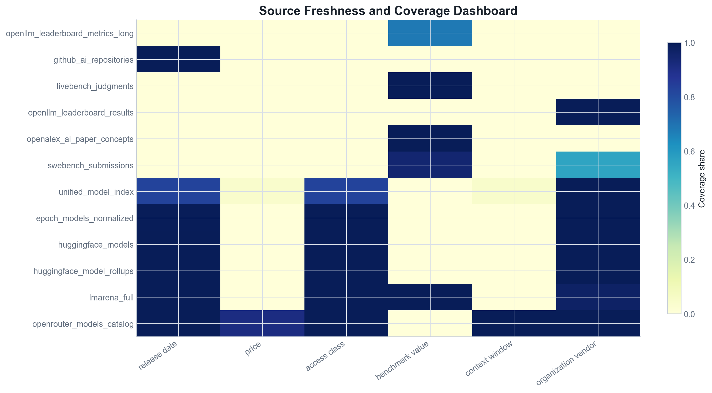
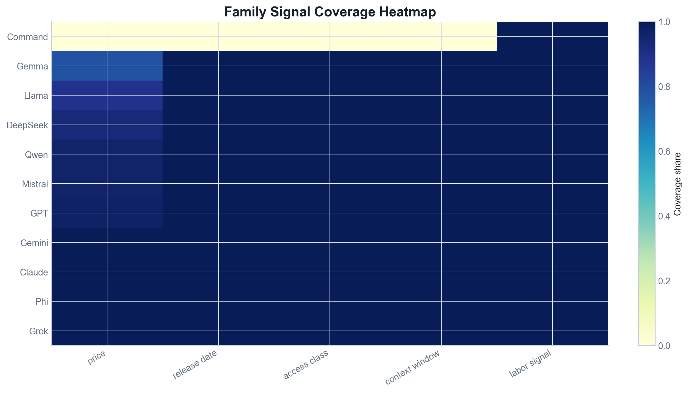
This is the new domain benchmark layer. It pulls together local benchmark sources and additional public sources downloaded during generation: LiveCodeBench, Open Medical-LLM Leaderboard result files, Terminal-Bench, FinanceBench, QFBench and Lexometrica LegalBench RU. Scores are normalized to a 0-100 frontier scale so fields can be compared without pretending that a medical QA percent, a legal composite, an arena rating and an agentic terminal score are the same measurement.
Domain catalog:
| domain_label | normalized_result_rows | source_count | benchmark_count | model_count | coverage_label | latest_eval_date | interpretation |
|---|---|---|---|---|---|---|---|
| Software engineering | 3020 | 4 | 4 | 391 | broad | 2026-05-14 | Code generation, repository repair, web development and terminal software workflows. |
| Science and reasoning | 46146 | 2 | 36 | 1368 | moderate | 2026-05-12 | Graduate-level science, GPQA-like reasoning, ARC/BBH/MuSR and broad reasoning suites. |
| Language and writing | 40009 | 2 | 2 | 480 | moderate | 2026-05-14 | General text quality, paraphrase, editing, summarization and subjective chat preference. |
| Instruction following | 1529 | 2 | 2 | 1457 | moderate | 2025-04-07 | Constraint following, output format obedience and prompt-level generalization. |
| Finance and quantitative analysis | 22 | 2 | 3 | 13 | moderate | 2026-05-07 | Financial QA, quantitative coding, risk, pricing, forecasting and professional finance tasks. |
| Mathematics | 12060 | 1 | 9 | 1339 | moderate | Competition math, quantitative reasoning and formal problem solving. | |
| Medicine and biomedical QA | 1873 | 1 | 10 | 184 | moderate | 2025-01-29 | Medical question answering, biomedical literature reasoning and clinical knowledge subsets. |
| Vision and multimodal | 10947 | 1 | 3 | 202 | thin | 2026-05-12 | Image understanding, image editing, text-to-image and multimodal preference leaderboards. |
| Search and document work | 166 | 1 | 1 | 24 | thin | 2026-05-12 | Search, long-document handling, retrieval-facing work and document synthesis. |
| Agentic terminal work | 146 | 1 | 1 | 51 | thin | 2026-05-15 | Long-horizon command-line tasks requiring planning, execution, debugging and environment control. |
| Legal reasoning | 20 | 1 | 2 | 10 | thin | 2026-03-01 | Legal issue spotting, rule application, citations and jurisdiction-specific legal reasoning. |
Representative high-scoring source rows:
| source_name | domain_label | benchmark | task | model_name | score_normalized_0_100 | eval_date | limitations |
|---|---|---|---|---|---|---|---|
| Terminal-Bench 2.0 leaderboard | Agentic terminal work | Terminal-Bench 2.0 | vix | Claude Opus 4.7 | 90.2 | 2026-05-15 | Agent, scaffold and model are entangled; do not attribute the whole score to model weights alone. |
| Terminal-Bench 2.0 leaderboard | Agentic terminal work | Terminal-Bench 2.0 | JJAgent | Multiple | 87.1 | 2026-05-15 | Agent, scaffold and model are entangled; do not attribute the whole score to model weights alone. |
| Terminal-Bench 2.0 leaderboard | Agentic terminal work | Terminal-Bench 2.0 | NexAU-AHE | GPT-5.5 | 84.7 | 2026-05-14 | Agent, scaffold and model are entangled; do not attribute the whole score to model weights alone. |
| Terminal-Bench 2.0 leaderboard | Agentic terminal work | Terminal-Bench 2.0 | LemonHarness | Multiple | 84.5 | 2026-05-14 | Agent, scaffold and model are entangled; do not attribute the whole score to model weights alone. |
| Terminal-Bench 2.0 leaderboard | Agentic terminal work | Terminal-Bench 2.0 | Capy | GPT-5.5 | 83.1 | 2026-05-14 | Agent, scaffold and model are entangled; do not attribute the whole score to model weights alone. |
| Terminal-Bench 2.0 leaderboard | Agentic terminal work | Terminal-Bench 2.0 | Polaris | Multiple | 82.2 | 2026-05-14 | Agent, scaffold and model are entangled; do not attribute the whole score to model weights alone. |
| Terminal-Bench 2.0 leaderboard | Agentic terminal work | Terminal-Bench 2.0 | Codex CLI | GPT-5.5 | 82 | 2026-04-23 | Agent, scaffold and model are entangled; do not attribute the whole score to model weights alone. |
| Terminal-Bench 2.0 leaderboard | Agentic terminal work | Terminal-Bench 2.0 | ForgeCode | GPT-5.4 | 81.8 | 2026-03-12 | Agent, scaffold and model are entangled; do not attribute the whole score to model weights alone. |
| Terminal-Bench 2.0 leaderboard | Agentic terminal work | Terminal-Bench 2.0 | WOZCODE | Claude Opus 4.7 | 80.2 | 2026-05-14 | Agent, scaffold and model are entangled; do not attribute the whole score to model weights alone. |
| Terminal-Bench 2.0 leaderboard | Agentic terminal work | Terminal-Bench 2.0 | TongAgents | Gemini 3.1 Pro | 80.2 | 2026-03-13 | Agent, scaffold and model are entangled; do not attribute the whole score to model weights alone. |
| Terminal-Bench 2.0 leaderboard | Agentic terminal work | Terminal-Bench 2.0 | LemonHarness | Multiple | 79.9 | 2026-05-14 | Agent, scaffold and model are entangled; do not attribute the whole score to model weights alone. |
| Terminal-Bench 2.0 leaderboard | Agentic terminal work | Terminal-Bench 2.0 | ForgeCode | Claude Opus 4.6 | 79.8 | 2026-03-12 | Agent, scaffold and model are entangled; do not attribute the whole score to model weights alone. |
| Terminal-Bench 2.0 leaderboard | Agentic terminal work | Terminal-Bench 2.0 | SageAgent | GPT-5.3-Codex | 78.4 | 2026-03-13 | Agent, scaffold and model are entangled; do not attribute the whole score to model weights alone. |
| Terminal-Bench 2.0 leaderboard | Agentic terminal work | Terminal-Bench 2.0 | ForgeCode | Gemini 3.1 Pro | 78.4 | 2026-03-02 | Agent, scaffold and model are entangled; do not attribute the whole score to model weights alone. |
| Terminal-Bench 2.0 leaderboard | Agentic terminal work | Terminal-Bench 2.0 | Droid | GPT-5.3-Codex | 77.3 | 2026-02-24 | Agent, scaffold and model are entangled; do not attribute the whole score to model weights alone. |
| Terminal-Bench 2.0 leaderboard | Agentic terminal work | Terminal-Bench 2.0 | Meta-Harness | Claude Opus 4.6 | 76.4 | 2026-05-14 | Agent, scaffold and model are entangled; do not attribute the whole score to model weights alone. |
| Terminal-Bench 2.0 leaderboard | Agentic terminal work | Terminal-Bench 2.0 | CodeBrain-1.5 | GPT-5.3-Codex | 75.8 | 2026-02-10 | Agent, scaffold and model are entangled; do not attribute the whole score to model weights alone. |
| Terminal-Bench 2.0 leaderboard | Agentic terminal work | Terminal-Bench 2.0 | Codelia | GPT-5.3-Codex | 75.7 | 2026-05-14 | Agent, scaffold and model are entangled; do not attribute the whole score to model weights alone. |
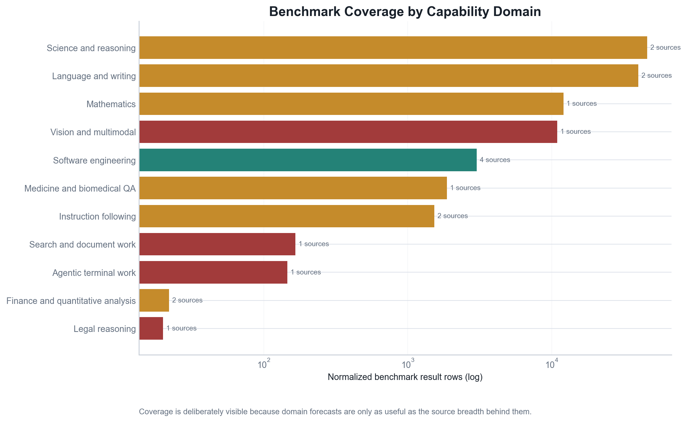
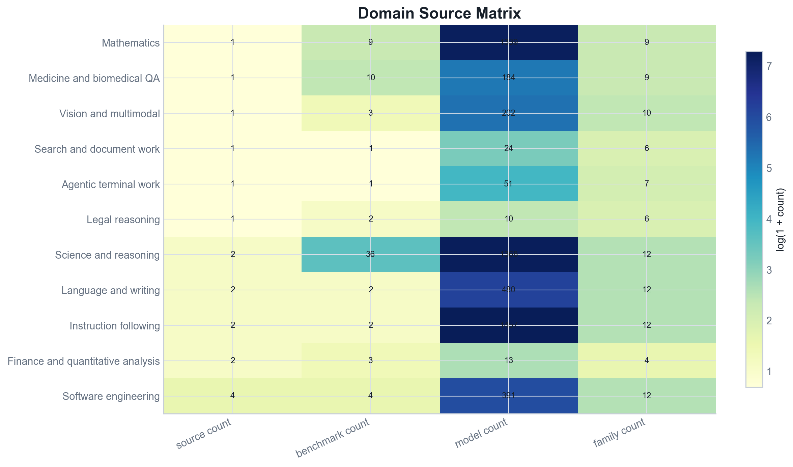
The velocity table estimates how quickly each field is improving in the public benchmark panel. When a domain has enough dated observations, the report uses its observed frontier slope. When the time series is too thin, it falls back to the cross-domain median and labels the slope source explicitly.
| domain_label | current_frontier_score | annual_frontier_point_gain_used | slope_source | years_observed | coverage_label | forecast_confidence |
|---|---|---|---|---|---|---|
| Vision and multimodal | 97.31 | 1.542 | median_within_benchmark_slope | 3 | thin | low |
| Search and document work | 95.21 | 0 | insufficient_comparable_history | 1 | thin | insufficient_history |
| Science and reasoning | 95.17 | 0 | median_within_benchmark_slope | 2 | moderate | insufficient_history |
| Legal reasoning | 93.88 | 0 | insufficient_comparable_history | 1 | thin | insufficient_history |
| Language and writing | 87.71 | 9.573 | median_within_benchmark_slope | 4 | moderate | low |
| Instruction following | 85.71 | 0 | median_within_benchmark_slope | 2 | moderate | insufficient_history |
| Agentic terminal work | 84.36 | 12 | median_within_benchmark_slope | 2 | thin | low |
| Software engineering | 79.87 | 4.094 | median_within_benchmark_slope | 4 | broad | medium |
| Medicine and biomedical QA | 72.39 | 0 | insufficient_comparable_history | 1 | moderate | insufficient_history |
| Finance and quantitative analysis | 64.89 | 0 | insufficient_comparable_history | 1 | moderate | insufficient_history |
| Mathematics | 39.38 | 0 | insufficient_comparable_history | 0 | moderate | insufficient_history |
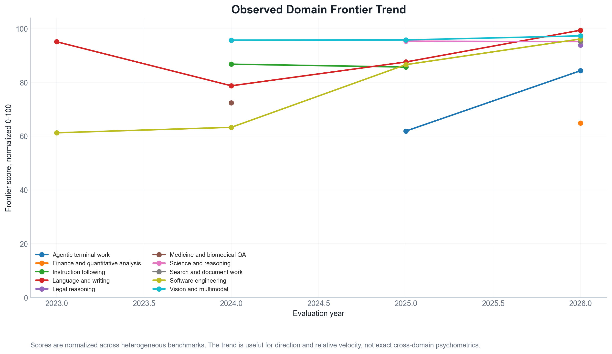
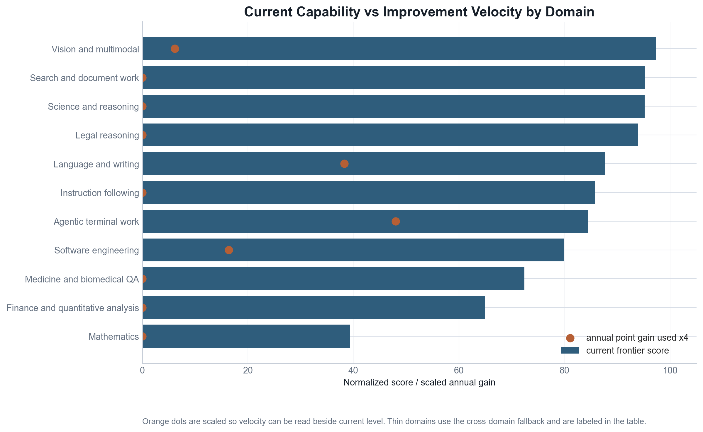
The domain forecast uses a bounded gap-closure model: a domain starts at its current normalized frontier score, closes a fraction of the remaining gap each year, and is capped below 100. This makes the forecast interpretable: the question is how quickly each field closes the remaining gap, not whether scores can grow without limit.
Base scenario by domain and horizon:
| domain_label | target_year | forecast_frontier_score | current_frontier_score | confidence | caveat |
|---|---|---|---|---|---|
| Vision and multimodal | 2028 | 98.17 | 97.31 | low | The data mixes perception and generation; downstream reliability depends heavily on task framing. |
| Vision and multimodal | 2031 | 98.97 | 97.31 | low | The data mixes perception and generation; downstream reliability depends heavily on task framing. |
| Vision and multimodal | 2036 | 99.5 | 97.31 | low | The data mixes perception and generation; downstream reliability depends heavily on task framing. |
| Search and document work | 2028 | 95.21 | 95.21 | insufficient_history | Retrieval quality, source grounding and tool access can dominate model-only scores. |
| Search and document work | 2031 | 95.21 | 95.21 | insufficient_history | Retrieval quality, source grounding and tool access can dominate model-only scores. |
| Search and document work | 2036 | 95.21 | 95.21 | insufficient_history | Retrieval quality, source grounding and tool access can dominate model-only scores. |
| Science and reasoning | 2028 | 95.17 | 95.17 | insufficient_history | This is a mixed domain; gains may come from either knowledge, search, reasoning-time or benchmark-specific training. |
| Science and reasoning | 2031 | 95.17 | 95.17 | insufficient_history | This is a mixed domain; gains may come from either knowledge, search, reasoning-time or benchmark-specific training. |
| Science and reasoning | 2036 | 95.17 | 95.17 | insufficient_history | This is a mixed domain; gains may come from either knowledge, search, reasoning-time or benchmark-specific training. |
| Legal reasoning | 2028 | 93.88 | 93.88 | insufficient_history | Legal performance is highly jurisdictional; benchmark score is not professional legal authority. |
| Legal reasoning | 2031 | 93.88 | 93.88 | insufficient_history | Legal performance is highly jurisdictional; benchmark score is not professional legal authority. |
| Legal reasoning | 2036 | 93.88 | 93.88 | insufficient_history | Legal performance is highly jurisdictional; benchmark score is not professional legal authority. |
| Language and writing | 2028 | 97.09 | 87.71 | low | Human preference and style vary; benchmark gains do not map one-to-one to brand-safe writing quality. |
| Language and writing | 2031 | 99.5 | 87.71 | low | Human preference and style vary; benchmark gains do not map one-to-one to brand-safe writing quality. |
| Language and writing | 2036 | 99.5 | 87.71 | low | Human preference and style vary; benchmark gains do not map one-to-one to brand-safe writing quality. |
| Instruction following | 2028 | 85.71 | 85.71 | insufficient_history | High scores can hide brittle behavior on a user's own constraints, so local evals remain important. |
| Instruction following | 2031 | 85.71 | 85.71 | insufficient_history | High scores can hide brittle behavior on a user's own constraints, so local evals remain important. |
| Instruction following | 2036 | 85.71 | 85.71 | insufficient_history | High scores can hide brittle behavior on a user's own constraints, so local evals remain important. |
| Agentic terminal work | 2028 | 96.29 | 84.36 | low | Agent scaffolding can dominate raw model quality, so model and agent should be separated when possible. |
| Agentic terminal work | 2031 | 99.5 | 84.36 | low | Agent scaffolding can dominate raw model quality, so model and agent should be separated when possible. |
| Agentic terminal work | 2036 | 99.5 | 84.36 | low | Agent scaffolding can dominate raw model quality, so model and agent should be separated when possible. |
| Software engineering | 2028 | 86.6 | 79.87 | medium | Coding benchmarks move quickly and are contamination-sensitive; use fresh task windows when possible. |
| Software engineering | 2031 | 92.72 | 79.87 | medium | Coding benchmarks move quickly and are contamination-sensitive; use fresh task windows when possible. |
| Software engineering | 2036 | 97.37 | 79.87 | medium | Coding benchmarks move quickly and are contamination-sensitive; use fresh task windows when possible. |
| Medicine and biomedical QA | 2028 | 72.39 | 72.39 | insufficient_history | Multiple-choice medical QA is not clinical deployment safety; human review and liability remain binding. |
| Medicine and biomedical QA | 2031 | 72.39 | 72.39 | insufficient_history | Multiple-choice medical QA is not clinical deployment safety; human review and liability remain binding. |
| Medicine and biomedical QA | 2036 | 72.39 | 72.39 | insufficient_history | Multiple-choice medical QA is not clinical deployment safety; human review and liability remain binding. |
| Finance and quantitative analysis | 2028 | 64.89 | 64.89 | insufficient_history | Benchmarks are sparse and often workflow-specific; treat forecasts as directional until more longitudinal data exists. |
| Finance and quantitative analysis | 2031 | 64.89 | 64.89 | insufficient_history | Benchmarks are sparse and often workflow-specific; treat forecasts as directional until more longitudinal data exists. |
| Finance and quantitative analysis | 2036 | 64.89 | 64.89 | insufficient_history | Benchmarks are sparse and often workflow-specific; treat forecasts as directional until more longitudinal data exists. |
Threshold timing:
| domain_label | threshold_score | base_years_to_threshold | estimated_threshold_year | confidence |
|---|---|---|---|---|
| Vision and multimodal | 90 | 0.0 | 2026.0 | low |
| Vision and multimodal | 95 | 0.0 | 2026.0 | low |
| Search and document work | 90 | 0.0 | 2026.0 | insufficient_history |
| Search and document work | 95 | 0.0 | 2026.0 | insufficient_history |
| Science and reasoning | 90 | 0.0 | 2026.0 | insufficient_history |
| Science and reasoning | 95 | 0.0 | 2026.0 | insufficient_history |
| Legal reasoning | 90 | 0.0 | 2026.0 | insufficient_history |
| Legal reasoning | 95 | n/a | n/a | insufficient_history |
| Language and writing | 90 | 0.29 | 2027.0 | low |
| Language and writing | 95 | 1.25 | 2028.0 | low |
| Instruction following | 90 | n/a | n/a | insufficient_history |
| Instruction following | 95 | n/a | n/a | insufficient_history |
| Agentic terminal work | 90 | 0.62 | 2027.0 | low |
| Agentic terminal work | 95 | 1.58 | 2028.0 | low |
| Software engineering | 90 | 3.44 | 2030.0 | medium |
| Software engineering | 95 | 6.85 | 2033.0 | medium |
| Medicine and biomedical QA | 90 | n/a | n/a | insufficient_history |
| Medicine and biomedical QA | 95 | n/a | n/a | insufficient_history |
| Finance and quantitative analysis | 90 | n/a | n/a | insufficient_history |
| Finance and quantitative analysis | 95 | n/a | n/a | insufficient_history |
| Mathematics | 90 | n/a | n/a | insufficient_history |
| Mathematics | 95 | n/a | n/a | insufficient_history |
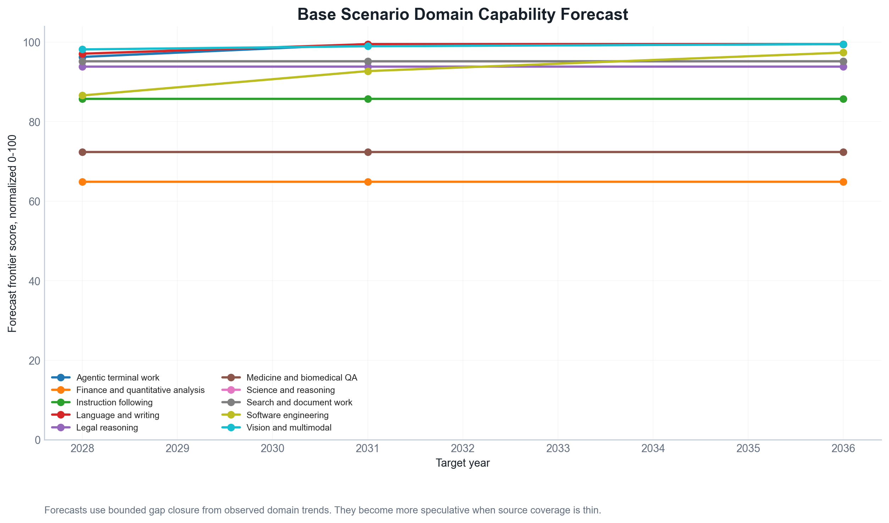
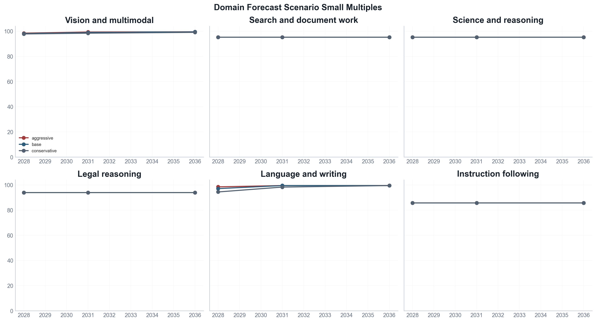
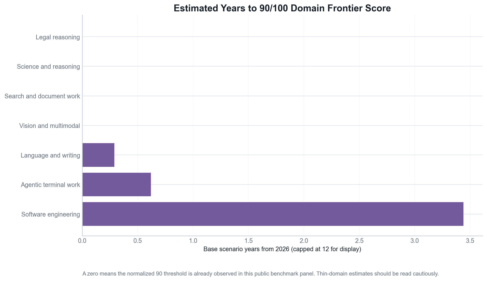
The index ranks model families and product lines, not legal companies. It blends benchmark performance, release velocity, API surface, price, research/ecosystem pull and openness. It is not a universal truth; sensitivity outputs show which rankings are weight-sensitive.
| rank | model_family | frontier_momentum_heuristic_index | sensitivity_label | performance_component | release_velocity_component | ecosystem_component | cost_efficiency_component | openness_component |
|---|---|---|---|---|---|---|---|---|
| 1 | Qwen | 81.39 | stable_top_tier | 85.3886 | 86.7888 | 80.9259 | 94.6247 | 97.9167 |
| 2 | GPT | 78.25 | stable_top_tier | 69.2487 | 100 | 87.1657 | 91.7046 | 41.4415 |
| 3 | Mistral | 68.53 | stable_top_tier | 89.5289 | 35.7759 | 70.6138 | 100 | 95.1064 |
| 4 | Gemini | 67.55 | weight_sensitive | 98.1347 | 49.903 | 70.7228 | 80.9676 | 0 |
| 5 | DeepSeek | 64.33 | weight_sensitive | 68.1501 | 32.9634 | 78.004 | 85.8923 | 92.2704 |
| 6 | Claude | 63.4 | weight_sensitive | 100 | 35.8405 | 57.7862 | 36.1209 | 55 |
| 7 | Llama | 62.14 | weight_sensitive | 64.0594 | 2.8125 | 81.3439 | 100 | 91.607 |
| 8 | Gemma | 57.64 | weight_sensitive | 78.7283 | 8.50216 | 65.6807 | 96.1247 | 91.9149 |
| 9 | Grok | 49.79 | weight_sensitive | 100 | 23.4806 | 27.389 | 0 | 1.84211 |
| 10 | Command | 40.83 | weight_sensitive | 50 | 50 | 0 | 50 | 41.6667 |
| 11 | Phi | 37.32 | weight_sensitive | 32.4262 | 0 | 48.871 | 91.7046 | 83.1769 |
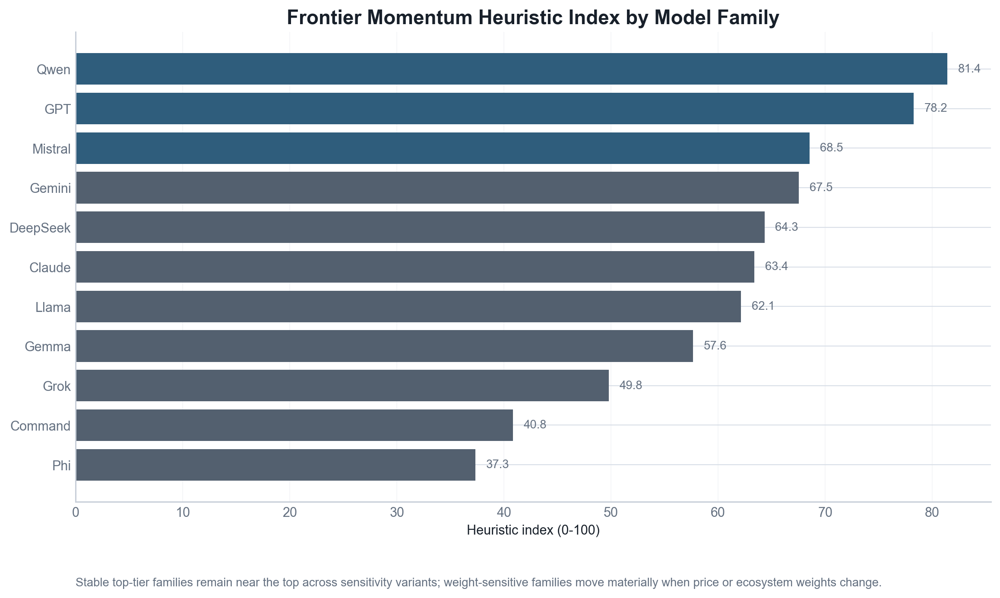
The headline rank is only the entry point. The stacked component chart below shows why a family ranks where it ranks. That matters because two families can have similar headline indexes for very different reasons: one may be performance-heavy, another may be ecosystem-heavy or cost-efficient.
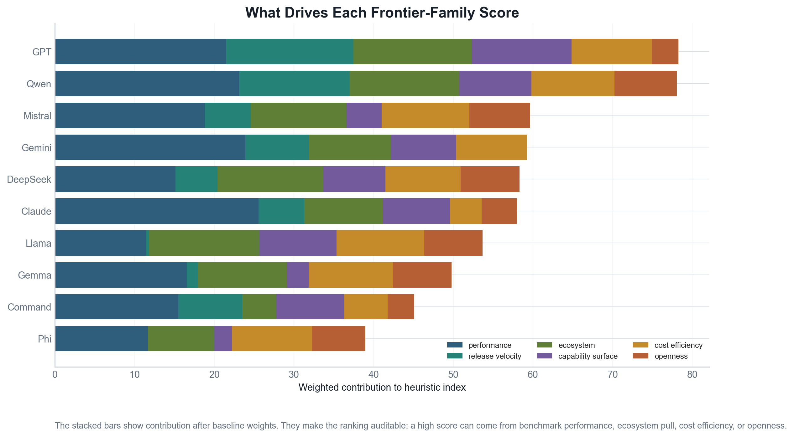
The evidence-depth scatter is the reviewer sanity check. A family with high score and high evidence count is more defensible than a family with a high score from sparse rows. Bubble size is tied to API catalog breadth, while color shows openness.
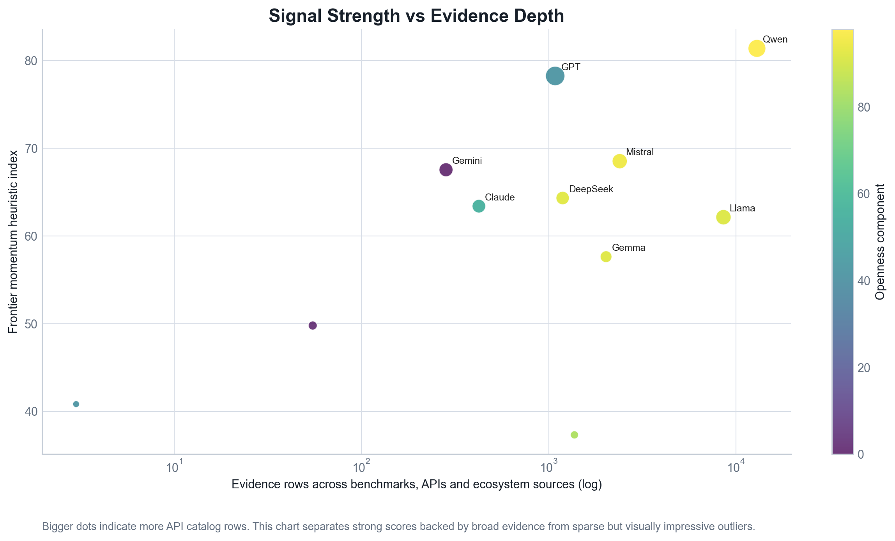
Reviewers often reason in terms of companies, but model families remain the cleaner technical unit. The vendor view is therefore a companion view: it blends the flagship family with the evidence-weighted portfolio mean and keeps the flagship family visible.
| rank | vendor | vendor_frontier_portfolio_score | flagship_family | family_count | portfolio_families | evidence_count |
|---|---|---|---|---|---|---|
| 1 | Alibaba | 81.39 | Qwen | 1 | Qwen | 12932 |
| 2 | OpenAI | 78.25 | GPT | 1 | GPT | 1083 |
| 3 | Mistral | 68.53 | Mistral | 1 | Mistral | 2394 |
| 4 | 64.51 | Gemini | 2 | Gemini,Gemma | 2307 | |
| 5 | DeepSeek | 64.33 | DeepSeek | 1 | DeepSeek | 1187 |
| 6 | Anthropic | 63.4 | Claude | 1 | Claude | 424 |
| 7 | Meta | 62.14 | Llama | 1 | Llama | 8569 |
| 8 | xAI | 49.79 | Grok | 1 | Grok | 55 |
| 9 | Command | 40.83 | Command | 1 | Command | 3 |
| 10 | Microsoft | 37.32 | Phi | 1 | Phi | 1372 |
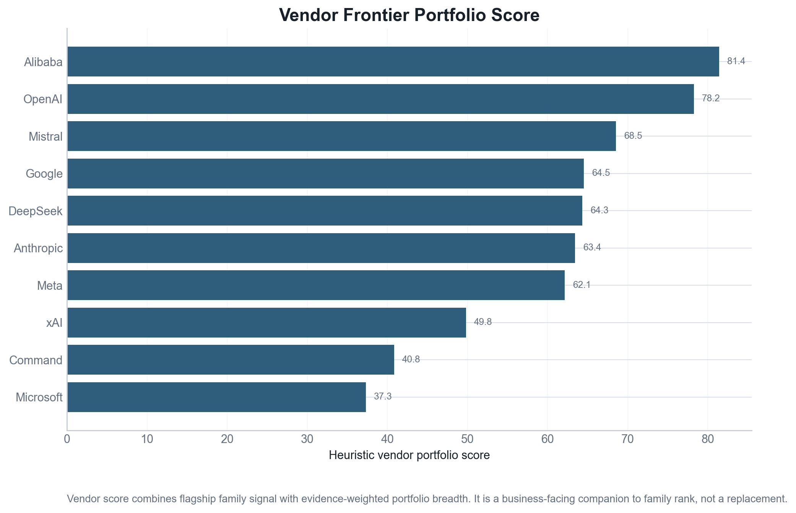
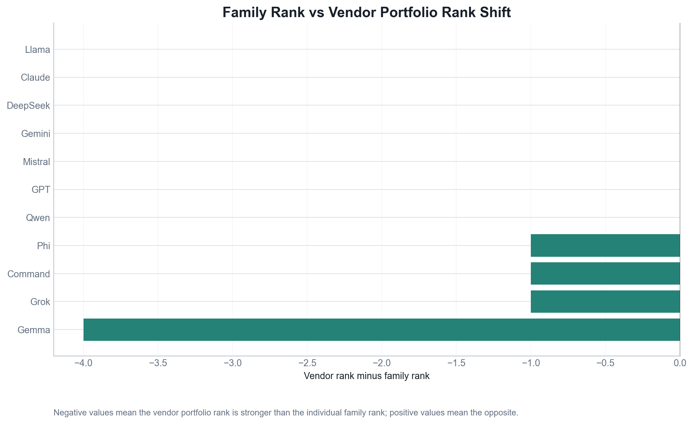
This table is not a prediction market. It is a Monte Carlo stress test over the scoring components: benchmark performance, release velocity, ecosystem pull, capability surface, cost and openness. Scenario weights are derived from the published baseline weights through documented multipliers (see LEADERSHIP_SCENARIO_MULTIPLIERS in the source), so no weight in the simulation is a hand-typed vector. simulation_win_share is the share of simulation draws won by each family, not a calibrated real-world probability. The corrected version separates frontier-quality leadership from open-ecosystem upside. The former asks who is most likely to make the raw best model; the latter asks who benefits if distribution and low cost matter more.
2-year simulated leaders:
| model_family | simulation_win_share | simulated_score_p10 | simulated_score_p90 |
|---|---|---|---|
| Qwen | 67.1% | 75.61 | 83.42 |
| GPT | 27.1% | 73.1 | 81.07 |
| Gemini | 4.6% | 68.35 | 77.65 |
| Claude | 1.2% | 65.85 | 75.35 |
| Mistral | 0.0% | 61.71 | 71.22 |
| DeepSeek | 0.0% | 56.42 | 64.66 |
| Llama | 0.0% | 51.94 | 61.23 |
| Gemma | 0.0% | 49.19 | 59.45 |
| Grok | 0.0% | 58.57 | 69.3 |
| Command | 0.0% | 40.07 | 48.28 |
10-year simulated leaders, frontier-quality scenario:
| model_family | simulation_win_share | simulated_score_p10 | simulated_score_p90 |
|---|---|---|---|
| Qwen | 49.2% | 73.38 | 84.87 |
| GPT | 21.8% | 70.28 | 81.69 |
| Gemini | 15.7% | 69.01 | 81.46 |
| Claude | 10.8% | 67.66 | 80.21 |
| Grok | 2.1% | 63.09 | 76.35 |
| Mistral | 0.5% | 60.52 | 73.4 |
| DeepSeek | 0.0% | 54.35 | 65.9 |
| Llama | 0.0% | 50.19 | 62.38 |
| Gemma | 0.0% | 48.44 | 61.33 |
| Command | 0.0% | 40.05 | 51.45 |
10-year simulated leaders, open-ecosystem-upside scenario:
| model_family | simulation_win_share | simulated_score_p10 | simulated_score_p90 |
|---|---|---|---|
| Qwen | 81.8% | 79.24 | 90.7 |
| GPT | 12.2% | 71.96 | 83.74 |
| Mistral | 3.9% | 68.78 | 81.21 |
| Llama | 1.4% | 66.22 | 78.89 |
| DeepSeek | 0.7% | 65.89 | 77.56 |
| Gemini | 0.0% | 53.8 | 66.97 |
| Claude | 0.0% | 50.02 | 61.89 |
| Gemma | 0.0% | 60 | 72.73 |
| Grok | 0.0% | 25.13 | 38.36 |
| Command | 0.0% | 30.47 | 42.31 |
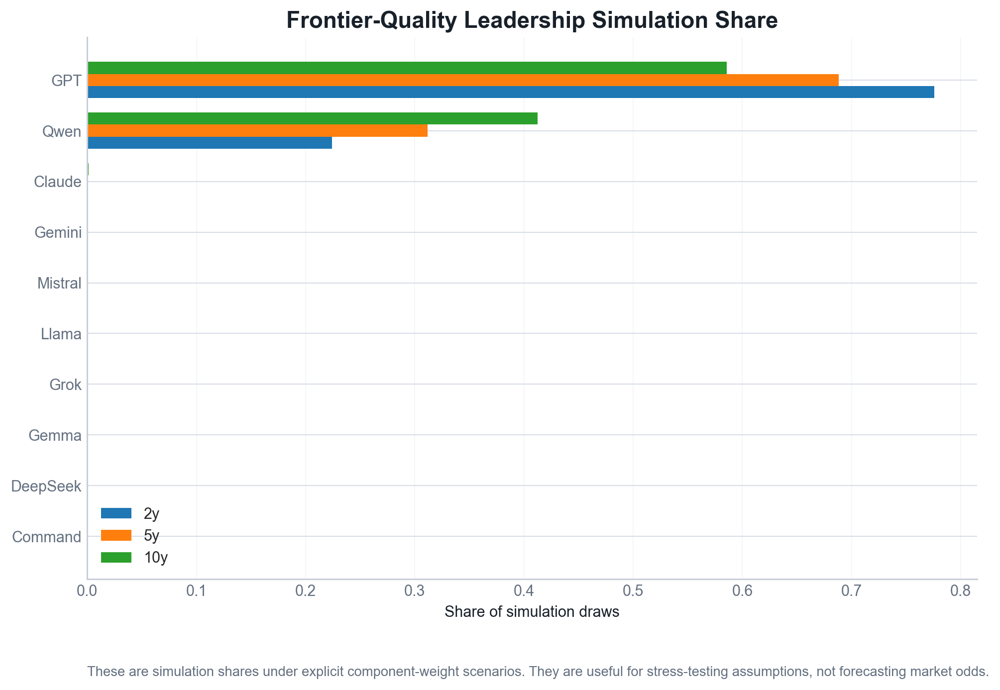
The scenario matrix compresses the same simulation into a reviewer-friendly view: each cell names the leading family under a scenario/horizon pair and reports its share of simulation draws. This makes it obvious when the answer changes because the question changed.
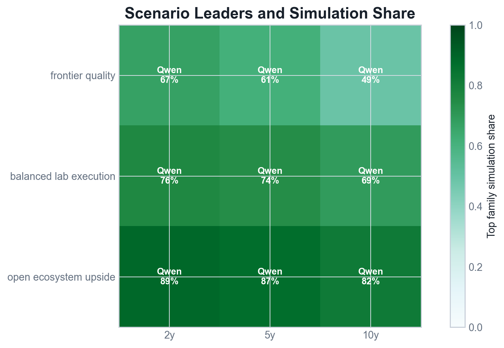
| category | closed_or_api | open_weight | open_closed_best_gap | open_closed_gap_pct_of_closed | comparison_note |
|---|---|---|---|---|---|
| text_to_image | 1448.89 | 1212.6857458083412 | 236.21 | 0.163 | Open and closed best ratings compared within the category's most recent leaderboard snapshot. |
| image_edit | 1467.01 | 1271.7708337163551 | 195.24 | 0.1331 | Open and closed best ratings compared within the category's most recent leaderboard snapshot. |
| document | 1522.08 | 1424.048055004106 | 98.03 | 0.0644 | Open and closed best ratings compared within the category's most recent leaderboard snapshot. |
| webdev | 1580.75 | 1491.3053126020395 | 89.44 | 0.0566 | Open and closed best ratings compared within the category's most recent leaderboard snapshot. |
| vision | 1389.78 | 1337.7470108143043 | 52.04 | 0.0374 | Open and closed best ratings compared within the category's most recent leaderboard snapshot. |
| text | 1553.57 | 1533.1052905646015 | 20.47 | 0.0132 | Open and closed best ratings compared within the category's most recent leaderboard snapshot. |
| search | 1251.1 | n/a | n/a | 0 | No comparable open-weight or closed/API row in the category's most recent snapshot. |
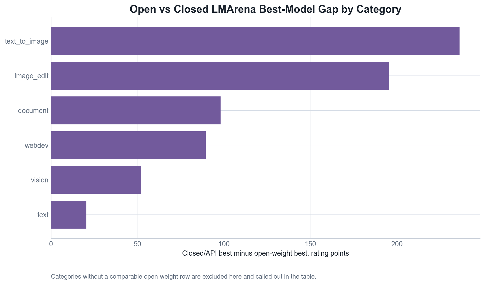
The gap chart shows differences, but differences alone can hide whether both sides are high-quality. The paired rating chart below shows the actual open and closed best observed ratings by category where both sides exist.
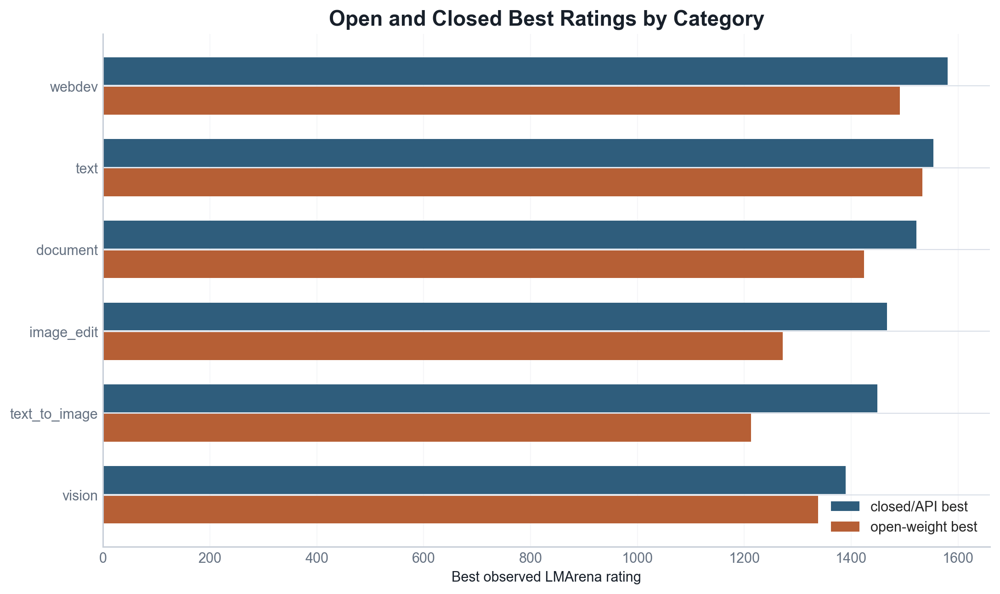
Raw best model and economically deployable model are not the same decision. This frontier is explicitly a family-level proxy: OpenRouter model prices are joined to the best observed LMArena rating for the model family, not to a direct benchmark for every listed model. It should be read as a deployability screen, not model-level proof.
| canonical_model | model_family | access_class | blended_price_usd_per_1m | family_best_lmarena | quality_proxy_level | price_performance_index |
|---|---|---|---|---|---|---|
| OpenAI: gpt-oss-20b | GPT | open_weight | 0.1015 | 1619.78 | family_level_proxy | 91.48 |
| inclusionAI: Ling-2.6-flash | Other | unknown | 0.023 | 1574.24 | family_level_proxy | 82.18 |
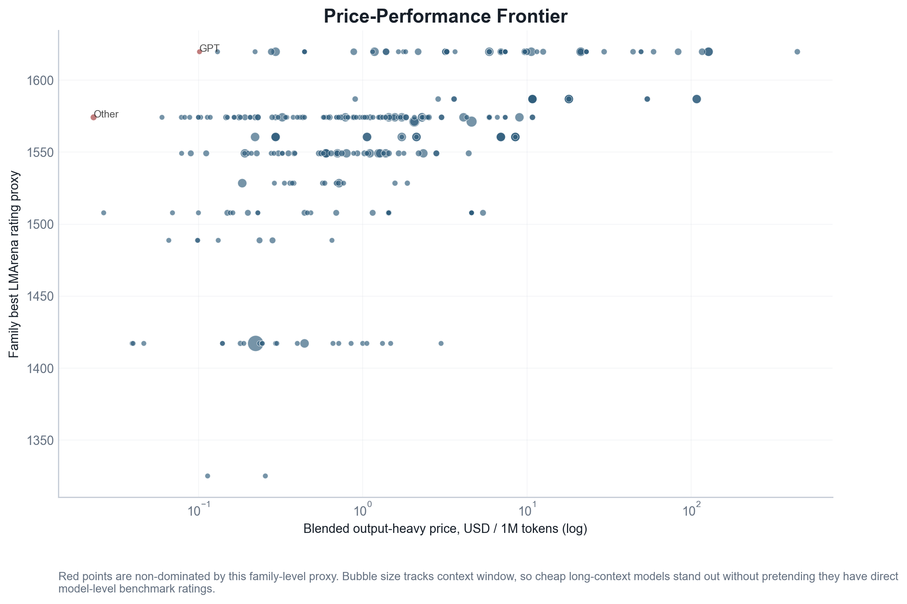
The context-price map keeps three product dimensions visible at once: context window, blended token price and family-level rating proxy. It prevents a common mistake in AI market analysis: treating cheap, long-context and high-quality as one metric.
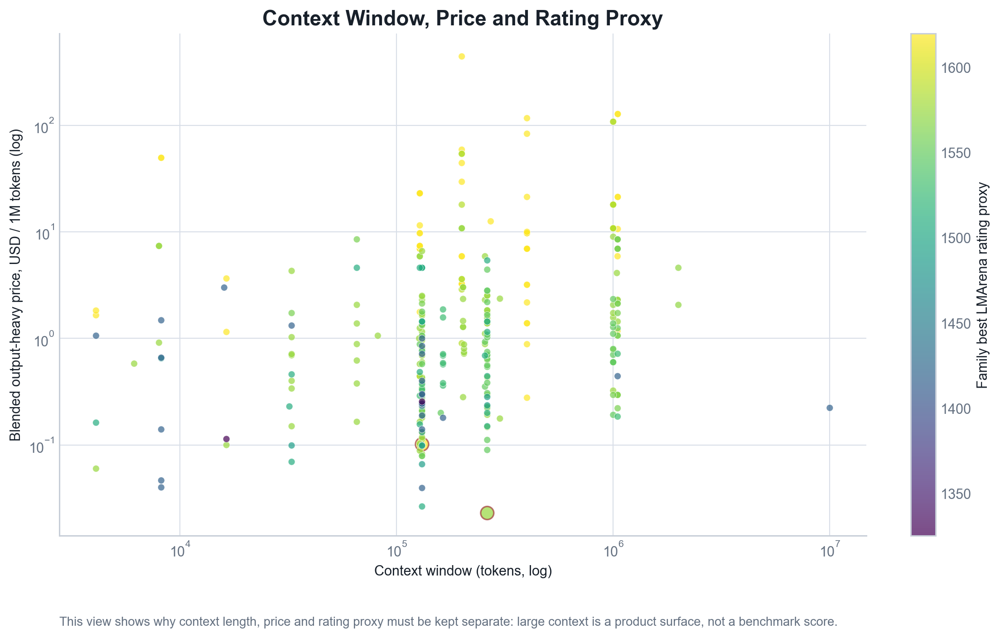
The audit table matches OpenRouter model IDs/names to LMArena, SWE-bench, LiveBench and Open LLM Leaderboard rows. Direct model matches are separated from family_only evidence so the deployability screen does not quietly inherit model-level certainty it does not have.
Match confidence audit:
| match_confidence | rows |
|---|---|
| alias_match | 244 |
| family_only | 839 |
| normalized_exact | 234 |
| unmatched | 91 |
Direct evidence price-performance rows:
| canonical_model | model_family | blended_price_usd_per_1m | direct_evidence_sources | direct_lmarena_rating | direct_lmarena_match_confidence | direct_price_performance_index | quality_proxy_level |
|---|---|---|---|---|---|---|---|
| Anthropic: Claude Opus 4.7 | Claude | 18 | lmarena | 1586.93 | normalized_exact | 88.3 | direct_model_lmarena |
| OpenAI: o3 | GPT | 5.9 | lmarena | 1590.01 | normalized_exact | 87.81 | direct_model_lmarena |
| OpenAI: GPT-4.1 | GPT | 5.9 | lmarena | 1560.56 | normalized_exact | 87.72 | direct_model_lmarena |
| Google: Gemini 3.1 Pro Preview | Gemini | 8.5 | lmarena | 1560.59 | normalized_exact | 86.9 | direct_model_lmarena |
| Anthropic: Claude Opus 4.6 | Claude | 18 | lmarena | 1575.66 | normalized_exact | 86.89 | direct_model_lmarena |
| OpenAI: o1 | GPT | 44.25 | livebench,lmarena,swebench | 1619.78 | normalized_exact | 86.68 | direct_model_lmarena |
| Google: Gemini 3 Flash Preview | Gemini | 2.125 | lmarena | 1535.16 | normalized_exact | 86.6 | direct_model_lmarena |
| Anthropic: Claude Sonnet 4.6 | Claude | 10.8 | lmarena | 1558.12 | normalized_exact | 85.93 | direct_model_lmarena |
| OpenAI: GPT-5.5 | GPT | 21.25 | lmarena | 1567.64 | normalized_exact | 85.59 | direct_model_lmarena |
| Qwen: Qwen3.5-Flash | Qwen | 0.19175 | lmarena | 1507.82 | normalized_exact | 85.57 | direct_model_lmarena |
| Z.ai: GLM 5 | Other | 1.458 | lmarena | 1548.75 | normalized_exact | 85.36 | direct_model_lmarena |
| DeepSeek: DeepSeek V4 Pro | DeepSeek | 0.71775 | lmarena | 1512.05 | normalized_exact | 85.26 | direct_model_lmarena |
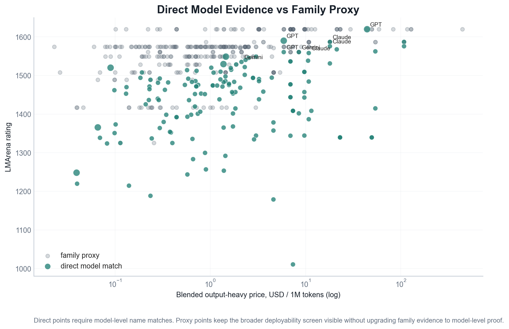
This section separates two claims that are often blended together. A modeled average message/task can become more expensive when users route more work to long-context, tool-heavy or agentic frontier runs. A fixed task, such as thesis-quality long-form writing under a stable token budget and quality threshold, can become cheaper when cheaper families become good enough. The tables below do not claim to observe private invoices or usage logs; they expose the assumptions behind the workload mix and the fixed-task thresholds.
Modeled message/task cost by release cohort:
| year | released_model_count | low_cost_blended_price_usd_per_1m | median_blended_price_usd_per_1m | frontier_blended_price_usd_per_1m | average_effective_tokens | modeled_average_message_cost_usd | message_cost_index_2023_100 |
|---|---|---|---|---|---|---|---|
| 2023 | 10 | 0.4788 | 1.4125 | 46.5 | 4655 | 0.026383 | 100 |
| 2024 | 57 | 0.209924 | 0.847 | 14.7 | 14708 | 0.078275 | 296.7 |
| 2025 | 232 | 0.21 | 0.8252 | 7.4125 | 28153 | 0.080733 | 306 |
| 2026 | 321 | 0.247 | 1.02 | 9.6 | 43046 | 0.152251 | 577.1 |
2026 workload profile components:
| display_name | mix_share | input_tokens | output_tokens | price_quantile | profile_cost_usd | weighted_cost_contribution_usd |
|---|---|---|---|---|---|---|
| Simple chat or Q&A | 0.32 | 900 | 500 | 0.2 | 0.000275 | 8.8e-05 |
| Knowledge-work message | 0.34 | 3500 | 1200 | 0.5 | 0.0032 | 0.001088 |
| Long-context analysis | 0.22 | 45000 | 5000 | 0.75 | 0.08125 | 0.017875 |
| Agentic workflow run | 0.12 | 220000 | 30000 | 0.9 | 1.11 | 0.1332 |
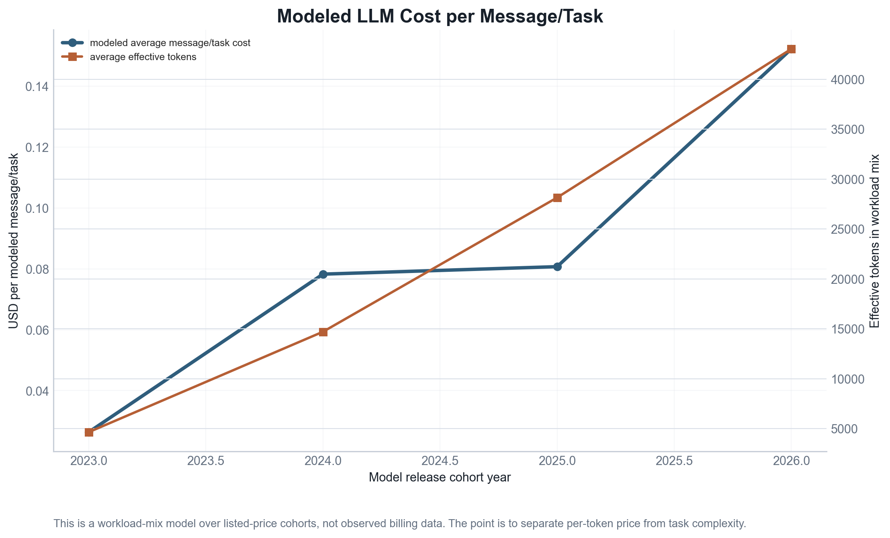
Current cheapest adequate fixed-task candidates:
| display_name | domain_label | selected_model | selected_family | required_domain_score | selected_domain_score | forecast_task_cost_usd | adequacy_status | human_gate |
|---|---|---|---|---|---|---|---|---|
| Thesis-quality long-form writing | Language and writing | OpenAI: gpt-oss-20b | GPT | 88 | 85.432 | 0.0067 | best_available_below_threshold | advisor, fact and citation review |
| Repository issue resolution | Software engineering | Anthropic Claude Sonnet Latest | Claude | 82 | 78.966 | 1.635 | best_available_below_threshold | senior engineer review and tests |
| Financial analysis memo | Finance and quantitative analysis | Anthropic: Claude 3 Haiku | Claude | 65 | 62.962 | 0.02125 | best_available_below_threshold | assumption and control owner signoff |
| Legal due-diligence memo | Legal reasoning | Anthropic: Claude 3 Haiku | Claude | 90 | 90.5 | 0.02875 | adequate | licensed legal review |
| Long-document synthesis | Search and document work | Anthropic: Claude 3 Haiku | Claude | 84 | 100 | 0.04125 | adequate | source-grounding and factual review |
| Customer-support resolution | Instruction following | Meta: Llama 3.1 8B Instruct | Llama | 78 | 81.208 | 0.00015 | adequate | policy, refund and safety review |
Base scenario fixed-task curves:
| display_name | target_year | selected_family | selected_domain_score | forecast_task_cost_usd | cost_factor_vs_current | adequacy_status |
|---|---|---|---|---|---|---|
| Thesis-quality long-form writing | 2028 | GPT | 96.11 | 0.001544 | 0.2304 | adequate |
| Thesis-quality long-form writing | 2031 | GPT | 98.854 | 0.000171 | 0.02548 | adequate |
| Thesis-quality long-form writing | 2036 | GPT | 98.854 | 0.000168 | 0.025 | adequate |
| Repository issue resolution | 2028 | GPT | 82.627 | 0.007834 | 0.004791 | adequate |
| Repository issue resolution | 2031 | GPT | 89.585 | 0.000866 | 0.00053 | adequate |
| Repository issue resolution | 2036 | GPT | 94.872 | 0.00085 | 0.00052 | adequate |
| Financial analysis memo | 2028 | Claude | 62.962 | 0.004896 | 0.2304 | best_available_below_threshold |
| Financial analysis memo | 2031 | Claude | 62.962 | 0.000541 | 0.02548 | best_available_below_threshold |
| Financial analysis memo | 2036 | Claude | 62.962 | 0.000531 | 0.025 | best_available_below_threshold |
| Legal due-diligence memo | 2028 | Claude | 90.5 | 0.006624 | 0.2304 | adequate |
| Legal due-diligence memo | 2031 | Claude | 90.5 | 0.000733 | 0.02548 | adequate |
| Legal due-diligence memo | 2036 | Claude | 90.5 | 0.000719 | 0.025 | adequate |
| Long-document synthesis | 2028 | Claude | 99.5 | 0.009504 | 0.2304 | adequate |
| Long-document synthesis | 2031 | Claude | 99.5 | 0.001051 | 0.02548 | adequate |
| Long-document synthesis | 2036 | Claude | 99.5 | 0.001031 | 0.025 | adequate |
| Customer-support resolution | 2028 | Llama | 81.208 | 3.5e-05 | 0.2304 | adequate |
| Customer-support resolution | 2031 | Llama | 81.208 | 4e-06 | 0.02548 | adequate |
| Customer-support resolution | 2036 | Llama | 81.208 | 4e-06 | 0.025 | adequate |
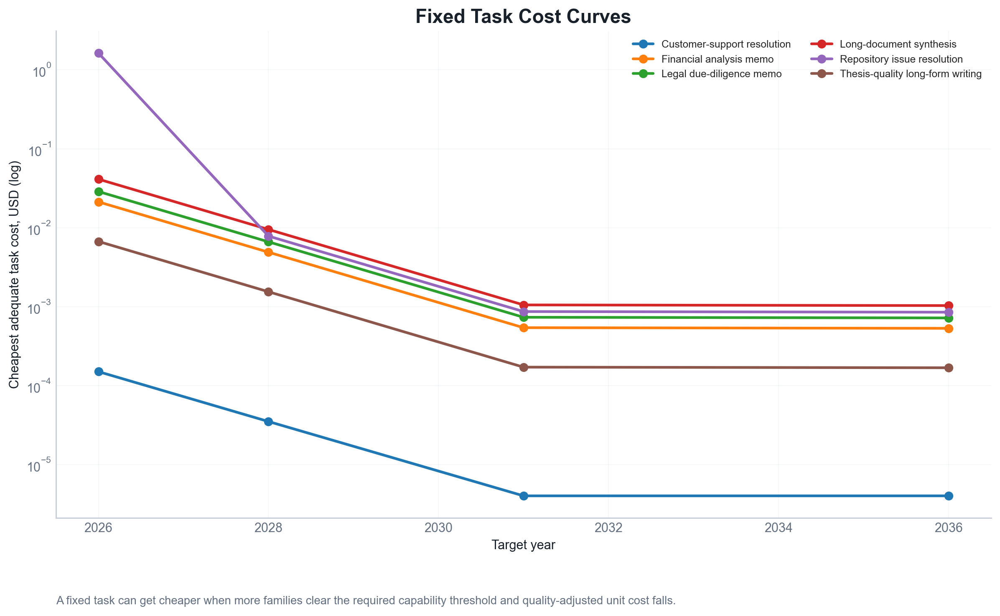
The divergence table is the explicit version of the user's hypothesis: frontier work-unit cost can rise because average tasks get harder, while fixed task cost can fall because capability diffuses into cheaper models.
| scenario | target_year | modeled_average_message_cost_usd | message_cost_factor_vs_2026 | median_fixed_task_cost_usd | fixed_task_cost_factor_vs_2026 | frontier_workload_complexity_multiplier |
|---|---|---|---|---|---|---|
| conservative | 2028 | 0.282871 | 1.8579 | 0.012147 | 0.48588 | 1.9345 |
| conservative | 2031 | 0.426584 | 2.8018 | 0.003336 | 0.13344 | 3.0997 |
| conservative | 2036 | 0.541756 | 3.5583 | 0.000719 | 0.02876 | 4.3549 |
| base | 2028 | 0.397407 | 2.6102 | 0.006624 | 0.26496 | 2.6102 |
| base | 2031 | 0.706212 | 4.6385 | 0.000733 | 0.02932 | 4.6385 |
| base | 2036 | 0.866989 | 5.6945 | 0.000719 | 0.02876 | 5.6945 |
| aggressive | 2028 | 0.578613 | 3.8004 | 0.003726 | 0.14904 | 3.3823 |
| aggressive | 2031 | 1.20351 | 7.9048 | 0.000719 | 0.02876 | 5.9069 |
| aggressive | 2036 | 1.63674 | 10.7503 | 0.000719 | 0.02876 | 6.0029 |
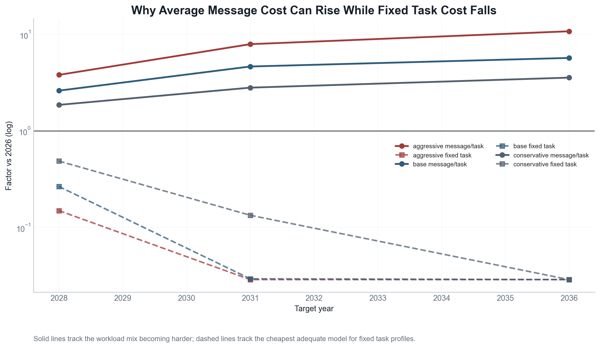
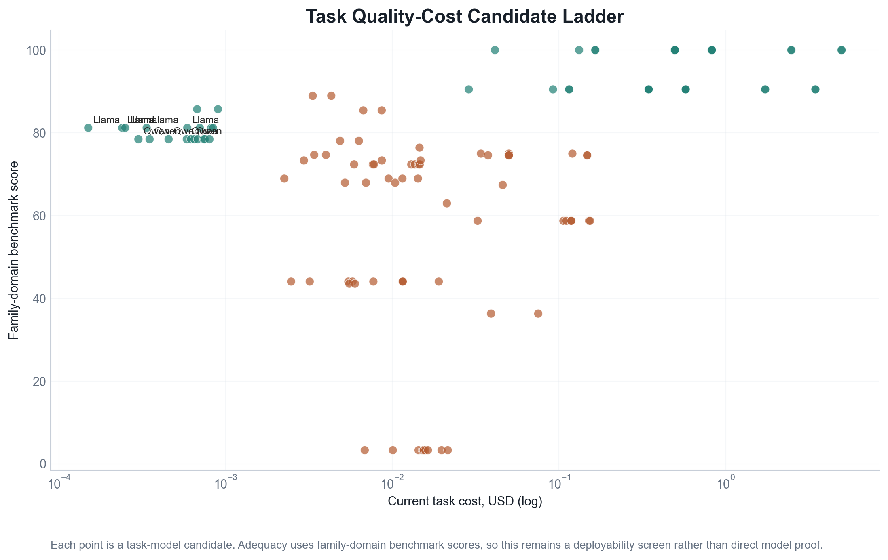
Cost evidence notes:
| source_id | name | used_for | url |
|---|---|---|---|
| openrouter_models_api | OpenRouter Models API | Current model price, context-window and modality catalog fields. | https://openrouter.ai/docs/guides/overview/models |
| epoch_llm_inference_price_trends | Epoch AI LLM inference price trends | External prior that quality-adjusted inference prices can fall faster than raw frontier price lists. | https://epoch.ai/data-insights/llm-inference-price-trends/ |
| price_of_progress_arxiv_2511_23455 | The Price of Progress: Algorithmic Efficiency and the Falling Cost of AI Inference | Quality-adjusted fixed-task cost-decline prior. | https://arxiv.org/abs/2511.23455 |
| agentic_token_consumption_arxiv_2604_22750 | How Do AI Agents Spend Your Money? | Token-amplification caveat for agentic coding and multi-step workflows. | https://arxiv.org/abs/2604.22750 |
| price_reversal_arxiv_2603_23971 | The Price Reversal Phenomenon | Caveat that listed price can be a weak proxy for realized cost when thinking tokens and retry variance differ by model. | https://arxiv.org/abs/2603.23971 |
| anthropic_economic_index_arxiv_2511_15080 | Anthropic Economic Index report: Uneven geographic and enterprise AI adoption | External support for rising directive delegation and more autonomous AI task use. | https://arxiv.org/abs/2511.15080 |
The labor table joins Anthropic observed occupation exposure to wage/job companion data, task-level penetration, automation/augmentation mode shares, and keyword-derived task bottlenecks from O*NET text. The output is an occupation-level pressure index, not a prediction that a whole occupation vanishes.
| title | near_term_disruption_index | substitution_pressure_index | augmentation_index | full_job_automation_feasibility_index | dominant_outcome | risk_label |
|---|---|---|---|---|---|---|
| Data Entry Keyers | 60.16 | 68.88 | 51.54 | 37.72 | replacement_candidate | very_high |
| Market Research Analysts and Marketing Specialists | 59.55 | 56.36 | 67.43 | 38.97 | replacement_candidate | high |
| Medical Transcriptionists | 58.94 | 60.44 | 60.15 | 28.27 | mixed_redesign | high |
| Technical Writers | 58.6 | 55.78 | 59.26 | 36.26 | replacement_candidate | high |
| Sales Representatives, Wholesale and Manufacturing, Except Technical and Scientific Products | 54.97 | 55.94 | 56.77 | 34.77 | mixed_redesign | high |
| Financial and Investment Analysts | 53.75 | 40.35 | 66.37 | 27.24 | augmentation_first | high |
| Statistical Assistants | 53.55 | 47.71 | 59.62 | 31.6 | augmentation_first | high |
| Computer Programmers | 52.61 | 52.14 | 55.26 | 26.07 | mixed_redesign | high |
| Human Resources Assistants, Except Payroll and Timekeeping | 51.76 | 50.06 | 52.03 | 30.44 | mixed_redesign | high |
| Mathematical Science Teachers, Postsecondary | 50.86 | 43.32 | 53.09 | 26.39 | augmentation_first | high |
| Social Science Research Assistants | 50.61 | 44.68 | 55.18 | 27.3 | augmentation_first | high |
| Engineering Teachers, Postsecondary | 50.23 | 40.29 | 50.32 | 24.37 | augmentation_first | high |
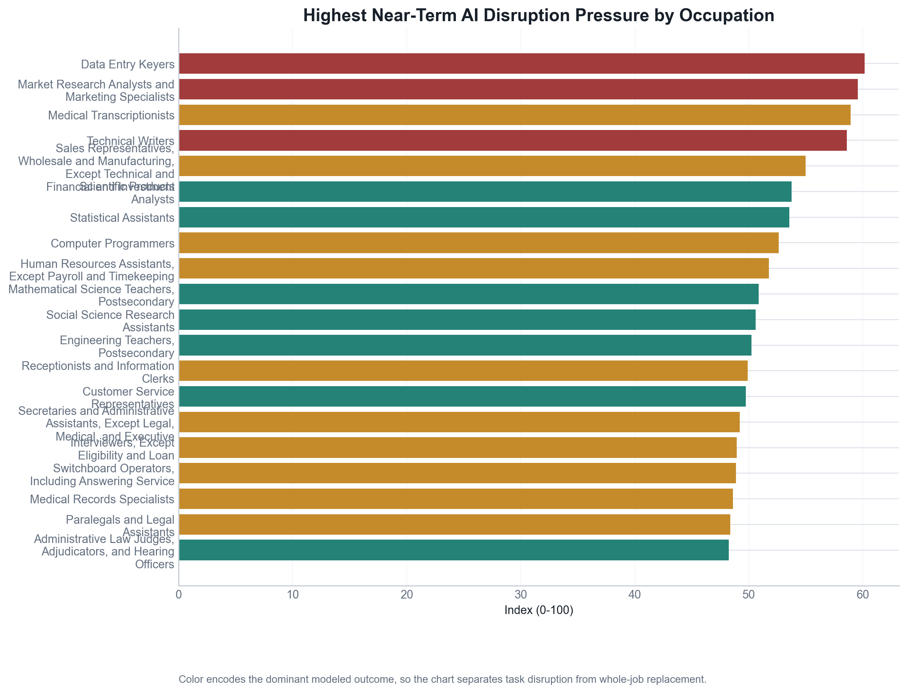
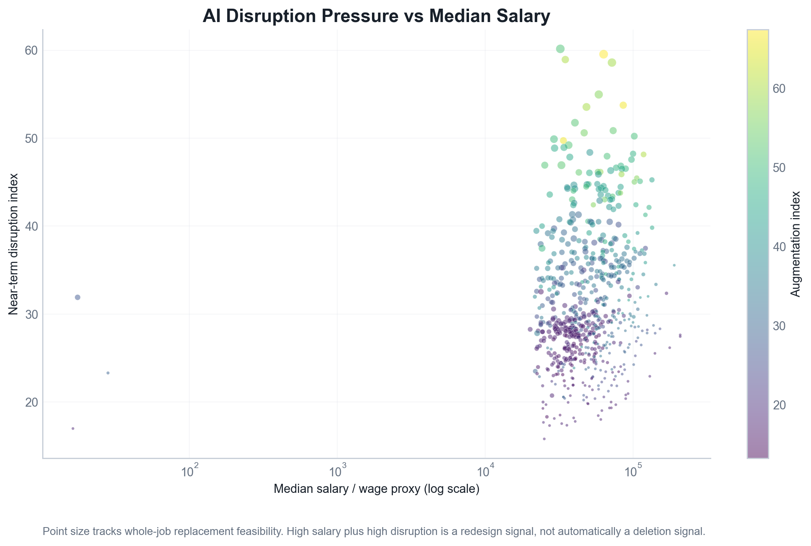
The replacement feasibility index gates substitution pressure through physical, trust, regulatory and task-coverage bottlenecks. This is the section that answers the "will AI take all jobs" question more honestly: many occupations are touched; fewer are clean full-job replacement candidates.
| title | job_family | full_job_automation_feasibility_index | substitution_pressure_index | human_bottleneck_index | dominant_outcome |
|---|---|---|---|---|---|
| Market Research Analysts and Marketing Specialists | Business and Financial Operations | 38.97 | 56.36 | 0 | replacement_candidate |
| Data Entry Keyers | Office and Administrative Support | 37.72 | 68.88 | 0 | replacement_candidate |
| Technical Writers | Arts, Design, Entertainment, Sports, and Media | 36.26 | 55.78 | 0 | replacement_candidate |
| Sales Representatives, Wholesale and Manufacturing, Except Technical and Scientific Products | Sales and Related | 34.77 | 55.94 | 2.4 | mixed_redesign |
| Office Clerks, General | Office and Administrative Support | 32.08 | 51.56 | 1.22 | mixed_redesign |
| Statistical Assistants | Office and Administrative Support | 31.6 | 47.71 | 0.78 | augmentation_first |
| Receptionists and Information Clerks | Office and Administrative Support | 30.45 | 53.46 | 1.26 | mixed_redesign |
| Human Resources Assistants, Except Payroll and Timekeeping | Office and Administrative Support | 30.44 | 50.06 | 0 | mixed_redesign |
| Secretaries and Administrative Assistants, Except Legal, Medical, and Executive | Office and Administrative Support | 30.34 | 52.33 | 1.95 | mixed_redesign |
| Medical Transcriptionists | Healthcare Support | 28.27 | 60.44 | 9.95 | mixed_redesign |
| Switchboard Operators, Including Answering Service | Office and Administrative Support | 27.58 | 49.12 | 0.68 | mixed_redesign |
| Social Science Research Assistants | Life, Physical, and Social Science | 27.3 | 44.68 | 0.68 | augmentation_first |
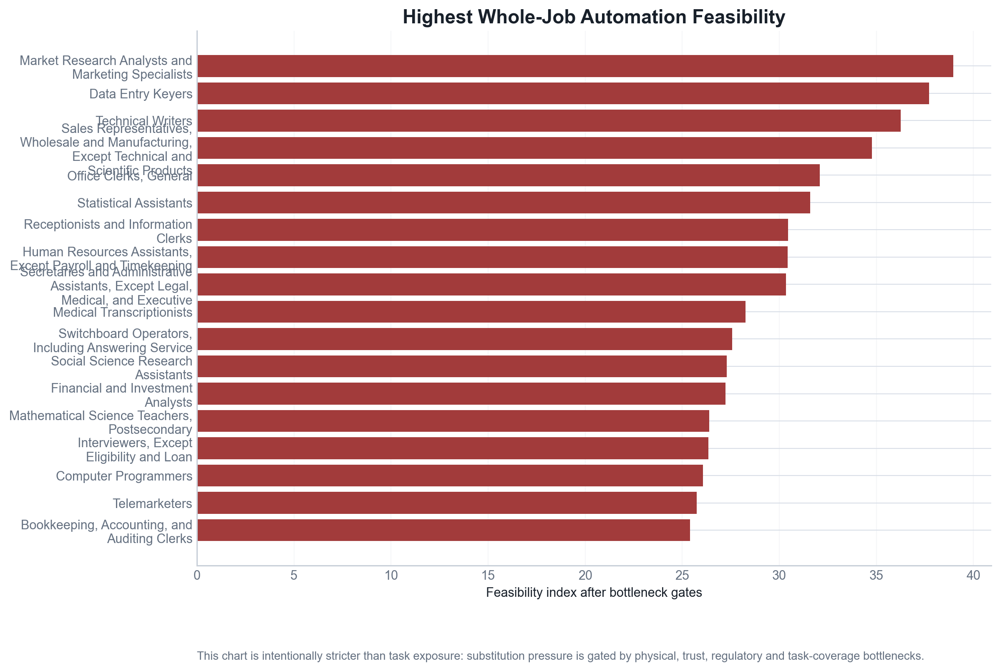
| labor_cluster_id | cluster_label | occupation_count | full_job_automation_feasibility_index | augmentation_index | human_bottleneck_index | example_occupations |
|---|---|---|---|---|---|---|
| 2 | replacement-prone clerical/transaction work | 113 | 20.4247 | 44.8353 | 1.31115 | Data Entry Keyers; Market Research Analysts and Marketing Specialists; Technical Writers; Sales Representatives, Wholesale and Manufacturing, Except Technical and Scientific Products; Financial and Investment Analysts |
| 0 | augmentation-heavy expert work | 28 | 10.9904 | 32.3325 | 1.56679 | Desktop Publishers; Special Effects Artists and Animators; Photographic Process Workers and Processing Machine Operators; Prepress Technicians and Workers; Graphic Designers |
| 4 | mixed redesign work | 298 | 10.799 | 22.9227 | 2.07715 | Power Plant Operators; Baggage Porters and Bellhops; Hosts and Hostesses, Restaurant, Lounge, and Coffee Shop; Couriers and Messengers; Library Technicians |
| 5 | mixed redesign work | 16 | 10.0306 | 32.4838 | 7.43938 | Medical Transcriptionists; Medical Records Specialists; Medical Secretaries and Administrative Assistants; Judicial Law Clerks; Court Reporters and Simultaneous Captioners |
| 6 | mixed redesign work | 104 | 7.67019 | 19.8389 | 7.65317 | Insurance Appraisers, Auto Damage; Computer, Automated Teller, and Office Machine Repairers; Rail Yard Engineers, Dinkey Operators, and Hostlers; Amusement and Recreation Attendants; Bus and Truck Mechanics and Diesel Engine Specialists |
| 1 | augmentation-heavy expert work | 152 | 5.75487 | 29.4653 | 2.2102 | Title Examiners, Abstractors, and Searchers; Compensation and Benefits Managers; Magnetic Resonance Imaging Technologists; Production, Planning, and Expediting Clerks; Purchasing Managers |
| 3 | augmentation-heavy expert work | 45 | 3.45956 | 27.58 | 9.87867 | Nurse Practitioners; Nurse Midwives; Genetic Counselors; Special Education Teachers, Preschool; Nurse Anesthetists |
Labor-weighted dominant outcome summary:
| group | occupation_count | labor_weight_sum | weighted_disruption_index | weighted_replacement_feasibility | weighted_augmentation_index |
|---|---|---|---|---|---|
| replacement_candidate | 3 | 22337.6 | 59.66 | 38.31 | 61.4 |
| mixed_redesign | 364 | 2.82005e+06 | 33.24 | 14.44 | 26.84 |
| augmentation_first | 389 | 3.79978e+06 | 32.62 | 9.57 | 36.23 |
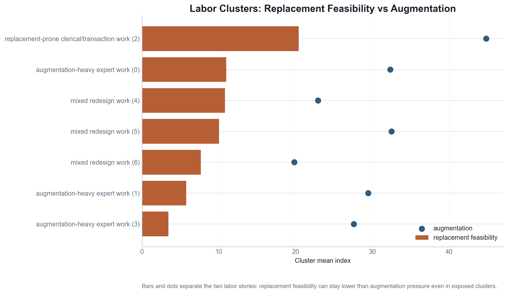
The labor-weighted outcome mix below is the report's guardrail against overclaiming. It weights modeled outcomes by the best available public labor proxy so a handful of highly automatable occupations do not dominate the narrative.
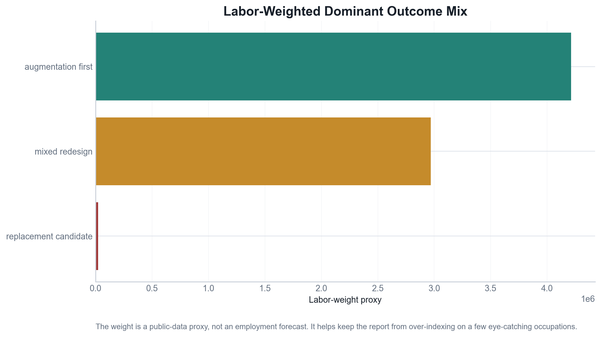
The domain layer translates occupation-level pressure into business language. It does not replace occupation evidence; each domain keeps example occupations and explicit human gates so a portfolio reviewer can see where the abstraction could fail.
| business_domain | pressure_label | disruption_index | augmentation_index | replacement_feasibility_index | human_bottleneck_index | example_occupations |
|---|---|---|---|---|---|---|
| finance_analysis | moderate | 38.13 | 39.65 | 14.24 | 1.42 | Market Research Analysts and Marketing Specialists; Financial and Investment Analysts; Accountants and Auditors; Loan Officers |
| marketing_content | moderate | 36.29 | 34.67 | 14.34 | 1.21 | Technical Writers; Public Relations Specialists; Real Estate Brokers; Real Estate Sales Agents |
| software_engineering | moderate | 34.98 | 35.76 | 12.74 | 3.13 | Computer Programmers; Social Science Research Assistants; Secretaries and Administrative Assistants, Except Legal, Medical, and Executive; Interviewers, Except Eligibility and Loan |
| legal_compliance | moderate | 32.82 | 29.97 | 10.41 | 3.11 | Paralegals and Legal Assistants; Administrative Law Judges, Adjudicators, and Hearing Officers; Judges, Magistrate Judges, and Magistrates; Property, Real Estate, and Community Association Managers |
| customer_support | moderate | 31.55 | 29.36 | 11.93 | 3.11 | Sales Representatives, Wholesale and Manufacturing, Except Technical and Scientific Products; Receptionists and Information Clerks; Customer Service Representatives; Switchboard Operators, Including Answering Service |
| operations_back_office | moderate | 30.12 | 25.13 | 10.86 | 3.52 | Data Entry Keyers; Statistical Assistants; Human Resources Assistants, Except Payroll and Timekeeping; Political Scientists |
| education | moderate | 29.77 | 25.61 | 9.36 | 3.42 | Mathematical Science Teachers, Postsecondary; Engineering Teachers, Postsecondary; English Language and Literature Teachers, Postsecondary; Health Specialties Teachers, Postsecondary |
| healthcare_administration | moderate | 29.09 | 30.08 | 5.52 | 7.75 | Medical Transcriptionists; Medical Records Specialists; Nurse Practitioners; Magnetic Resonance Imaging Technologists |
Workflow examples:
| business_domain | workflow_example | likely_ai_role | human_gate |
|---|---|---|---|
| software_engineering | Issue triage, code review, test generation and migration planning | draft patches and review checklists | senior engineer approval and production ownership |
| customer_support | Ticket summarization, answer drafting and escalation routing | suggest responses and detect repeated issues | human review for refunds, safety and account actions |
| legal_compliance | Contract review, policy comparison and evidence packet preparation | extract clauses and compare requirements | licensed professional signoff |
| marketing_content | Campaign briefs, SEO drafts, localization and asset variants | generate drafts and performance hypotheses | brand, legal and factual review |
| finance_analysis | Variance explanations, spreadsheet checks and memo drafting | surface anomalies and draft analysis | accountability for assumptions and controls |
| healthcare_administration | Claims coding, prior authorization packets and patient-message drafts | prepare structured documentation | clinical and compliance review |
| education | Lesson planning, tutoring support and feedback drafting | adapt materials and summarize progress | teacher judgment and student relationship |
| operations_back_office | Data entry cleanup, scheduling, reconciliation and process documentation | automate routine transformations | exception handling and vendor/customer accountability |
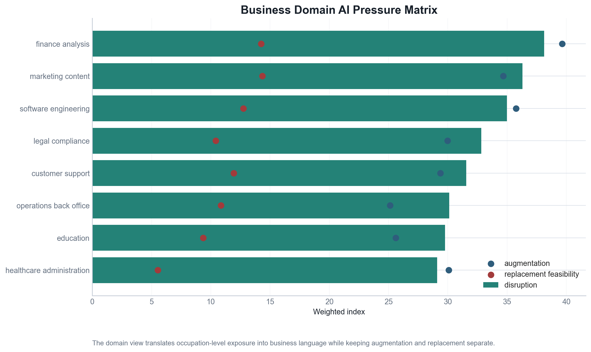
Base scenario subset:
| target_year | metric | value | unit | method |
|---|---|---|---|---|
| 2028 | frontier_context_window_multiplier | 6.23 | x current API catalog trend | capped scenario from OpenRouter upper-tail slope; raw=6.23x capped=False |
| 2028 | frontier_output_price_factor | 0.4365 | fraction of current low-price frontier API output cost | Explicit price-decline scenario; current-catalog release-cohort diagnostic=0.036, scenario_assumed=-0.180 |
| 2028 | open_weight_lmarena_gap_remaining | 36.2 | arena rating points | current open vs closed LMArena gap with scenario-specific closure speed |
| 2028 | share_of_us_occupation_tasks_materially_touched | 0.09 | share of task-weighted occupation activity | Explicit scenario task-contact assumption (0.09 at 2y), capped by observed p90 substitution pressure; not a transition-model estimate. |
| 2031 | frontier_context_window_multiplier | 64 | x current API catalog trend | capped scenario from OpenRouter upper-tail slope; raw=96.70x capped=True |
| 2031 | frontier_output_price_factor | 0.1259 | fraction of current low-price frontier API output cost | Explicit price-decline scenario; current-catalog release-cohort diagnostic=0.036, scenario_assumed=-0.180 |
| 2031 | open_weight_lmarena_gap_remaining | 19.1 | arena rating points | current open vs closed LMArena gap with scenario-specific closure speed |
| 2031 | share_of_us_occupation_tasks_materially_touched | 0.22 | share of task-weighted occupation activity | Explicit scenario task-contact assumption (0.22 at 5y), capped by observed p90 substitution pressure; not a transition-model estimate. |
| 2036 | frontier_context_window_multiplier | 64 | x current API catalog trend | capped scenario from OpenRouter upper-tail slope; raw=9351.33x capped=True |
| 2036 | frontier_output_price_factor | 0.05 | fraction of current low-price frontier API output cost | Explicit price-decline scenario; current-catalog release-cohort diagnostic=0.036, scenario_assumed=-0.180 |
| 2036 | open_weight_lmarena_gap_remaining | 3.8 | arena rating points | current open vs closed LMArena gap with scenario-specific closure speed |
| 2036 | share_of_us_occupation_tasks_materially_touched | 0.352 | share of task-weighted occupation activity | Explicit scenario task-contact assumption (0.40 at 10y), capped by observed p90 substitution pressure; not a transition-model estimate. |
The dashboard puts four scenario families on one page: context scale, output price, open-weight benchmark gap and task-share contact. The useful reading is not the exact number in 2036; it is which assumptions move together and which do not.
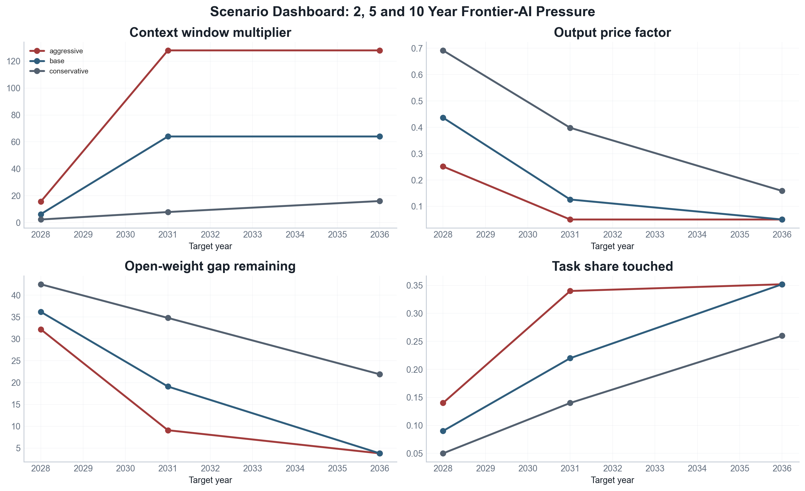
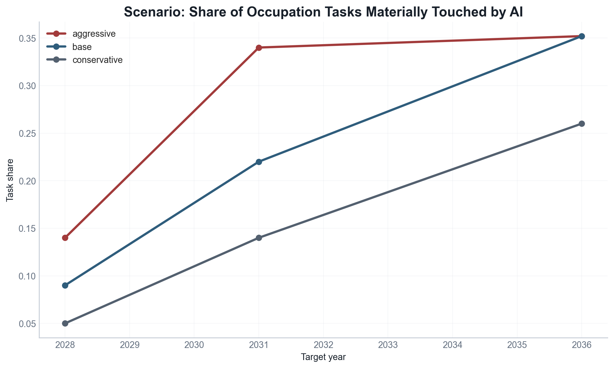
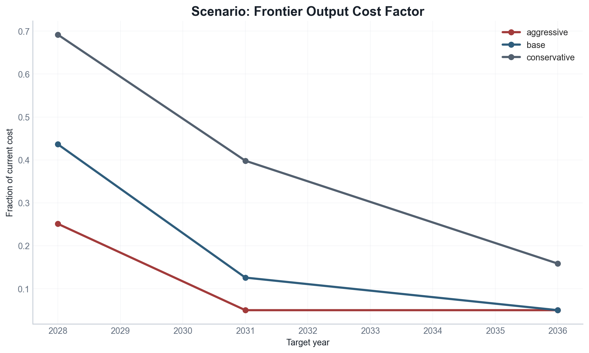
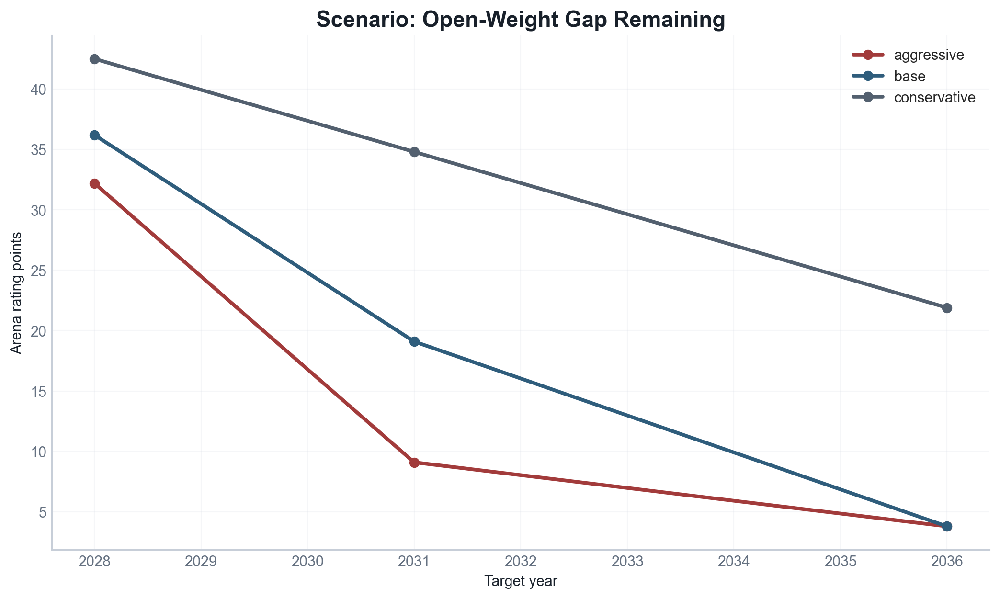
The uncertainty view stress-tests component weights and evidence depth. These intervals are not calibrated confidence intervals; they are a visibility layer for how much the rank can move when public-source signals are perturbed.
| model_family | current_rank | score_p10 | score_p50 | score_p90 | best_rank | median_rank | worst_rank | rank_stability_label |
|---|---|---|---|---|---|---|---|---|
| Qwen | 1 | 77.11 | 81.19 | 85.38 | 1 | 1 | 3 | stable |
| GPT | 2 | 73.99 | 77.91 | 81.33 | 1 | 2 | 5 | stable |
| Gemini | 4 | 62.7 | 67.5 | 71.75 | 2 | 4 | 8 | moderate |
| Mistral | 3 | 63.23 | 68.03 | 73.01 | 2 | 4 | 7 | stable |
| DeepSeek | 5 | 60.27 | 64.19 | 68.58 | 2 | 5 | 9 | moderate |
| Llama | 7 | 57.32 | 62.29 | 66.71 | 3 | 6 | 9 | moderate |
| Claude | 6 | 58.39 | 62.7 | 66.93 | 2 | 6 | 8 | moderate |
| Gemma | 8 | 52.21 | 57.5 | 63.15 | 4 | 8 | 10 | stable |
| Grok | 9 | 44.62 | 49.56 | 55.1 | 7 | 9 | 11 | stable |
| Command | 10 | 34.17 | 41.78 | 49.26 | 3 | 10 | 11 | stable |
| Phi | 11 | 32.83 | 37.52 | 42.48 | 9 | 11 | 11 | stable |
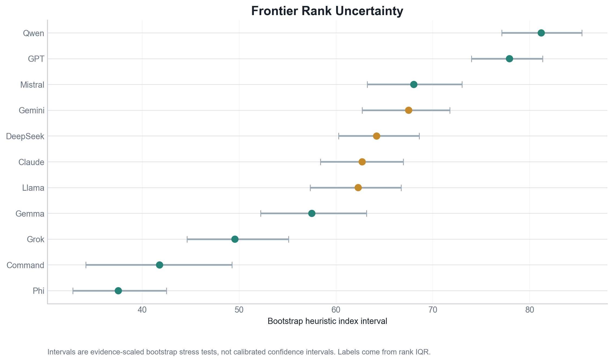
The forecast band chart is a scenario envelope across conservative, base and aggressive cases. It should not be read as a statistical confidence band.
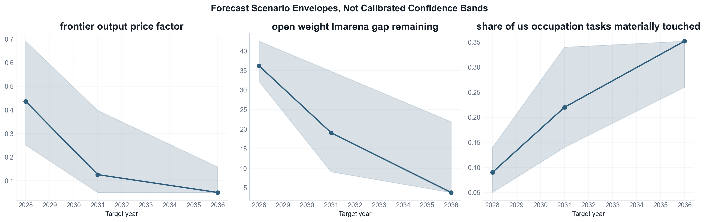
Release cadence separates visible public execution speed from benchmark quality. The cadence tables combine OpenRouter API catalog entries and Epoch metadata, deduplicated by family, vendor, product line and date.
Family cadence:
| model_family | vendor | total_releases | recent_releases_365d | median_days_between_releases | days_since_latest_release | cadence_label |
|---|---|---|---|---|---|---|
| GPT | OpenAI | 162 | 66 | 16 | 10 | fast |
| Qwen | Alibaba | 131 | 64 | 8 | 18 | fast |
| Gemini | 69 | 31 | 14 | 8 | fast | |
| Mistral | Mistral | 67 | 30 | 17 | 15 | fast |
| Claude | Anthropic | 37 | 24 | 37.5 | 3 | fast |
| DeepSeek | DeepSeek | 52 | 19 | 26.5 | 21 | fast |
| Grok | xAI | 22 | 13 | 40 | 15 | fast |
| Gemma | 31 | 9 | 18 | 42 | fast | |
| Llama | Meta | 92 | 3 | 13 | 212 | fast |
| Phi | Microsoft | 17 | 1 | 71 | 210 | fast |
Vendor cadence:
| vendor | portfolio_families | total_releases | recent_releases_365d | median_days_between_releases | cadence_label |
|---|---|---|---|---|---|
| OpenAI | GPT | 162 | 66 | 16 | fast |
| Alibaba | Qwen | 131 | 64 | 8 | fast |
| Gemini,Gemma | 100 | 40 | 12 | fast | |
| Mistral | Mistral | 67 | 30 | 17 | fast |
| Anthropic | Claude | 37 | 24 | 37.5 | fast |
| DeepSeek | DeepSeek | 52 | 19 | 26.5 | fast |
| xAI | Grok | 22 | 13 | 40 | fast |
| Meta | Llama | 92 | 3 | 13 | fast |
| Microsoft | Phi | 17 | 1 | 71 | fast |
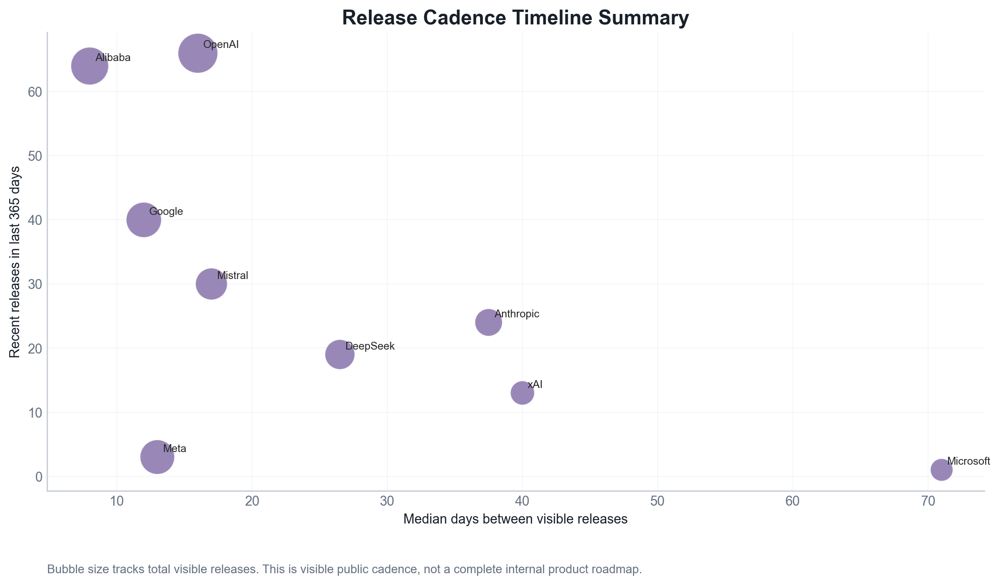
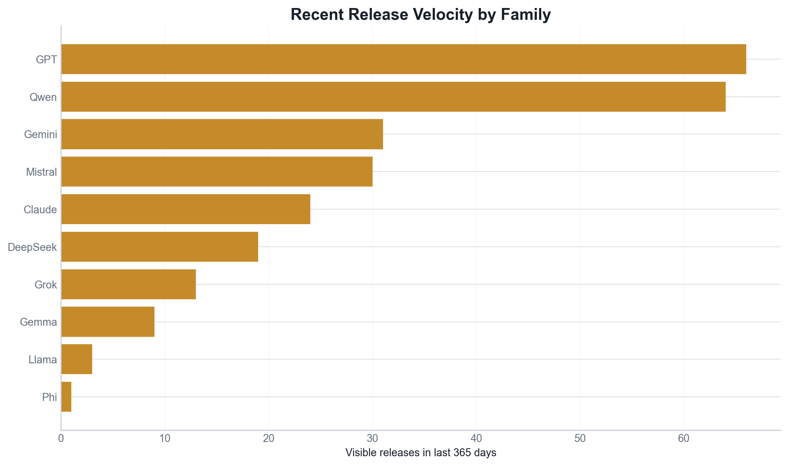
AI looks less like a single prior wave and more like an uncomfortable hybrid: spreadsheet-style task rebundling, internet-style diffusion, cloud-style API economics, and electricity-style long-run production redesign. Every dimension score in this table is an author-assigned subjective prior (input_basis=author_assigned_subjective_prior), published for transparency rather than as evidence; the similarity score inherits that status.
| wave | period | ai_similarity_score | interpretation |
|---|---|---|---|
| cloud_saas | 2006-2022 | 99.17 | Best analogy for enterprise adoption lags and API-first business-model shift. |
| internet | 1993-2010 | 98.86 | Best analogy for general-purpose diffusion, platform creation and strange second-order labor demand. |
| smartphones | 2007-2020 | 97.44 | Best analogy for consumer pull, app ecosystems and fast behavioral rewiring. |
| containerization | 1956-1990 | 97.23 | Best analogy for cost shock in a hidden infrastructure layer. |
| search_ads | 1998-2015 | 96.53 | Best analogy for advertising-funded discovery and winner-take-most information layers. |
| electricity | 1882-1930 | 96.22 | Best analogy for long-run production reorganization, not near-term speed. |
| spreadsheets | 1979-1995 | 95.85 | Best analogy for occupational task rebundling and sudden knowledge-worker productivity jumps. |
| industrial_robotics | 1961-2020 | 89.11 | Useful negative analogy: physical deployment is slower and more capital-locked than software AI. |
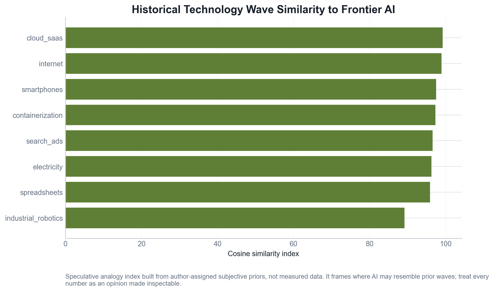
| claim_id | claim | evidence | confidence | analysis_captured_at |
|---|---|---|---|---|
| company-next-best-model | Qwen has the strongest composite signal for near-term frontier leadership, but the top open-weight ecosystem score is not necessarily the same family. | Composite of LMArena, SWE-bench, OpenRouter, Epoch, Hugging Face, GitHub and OpenAlex indicators. | medium | 2026-08-21T11:07:27+00:00 |
| jobs-augmentation-not-total-replacement | The labor signal is broad task contact, not full-job deletion: high-exposure occupations still retain bottlenecks from trust, regulation, physical work and accountability. | Anthropic Economic Index occupation exposure joined to O*NET task text, task collaboration modes and wage/job metadata. | medium-high | 2026-08-21T11:07:27+00:00 |
| open-source-catchup | Open-weight systems look structurally advantaged on ecosystem and cost but still need repeated frontier jumps to erase closed/API benchmark gaps. | OpenRouter price fields, Hugging Face downloads/files, LMArena access-class split and Epoch open-weight release metadata. | medium | 2026-08-21T11:07:27+00:00 |
| ten-year-forecast | The 10-year question is less whether AI touches most cognitive workflows and more whether institutions redesign jobs around verification, liability and human preference. | Scenario table combines capability trend, price decline, observed task exposure and bottleneck scoring. | speculative | 2026-08-21T11:07:27+00:00 |
| finding | evidence | why_it_is_interesting | artifact | analysis_captured_at |
|---|---|---|---|---|
| Raw frontier leadership and open-distribution upside are different questions. | In the 10-year frontier-quality scenario, Qwen leads (49.2% of simulation draws); in the open-ecosystem-upside scenario, Qwen leads (81.8% of simulation draws). | The previous single 10-year number was misleading because it mixed best-model simulation share with adoption economics. | company_next_frontier_probabilities.csv | 2026-08-21T11:07:27+00:00 |
| The open-vs-closed gap is not one gap. | The largest measured LMArena category gap is text_to_image at 236.2 rating points. | Open-source catchup can be true in one domain and false in another; a single headline benchmark hides where closed labs still have moat. | open_closed_gap_by_category.csv | 2026-08-21T11:07:27+00:00 |
| Cheap models can sit on the efficient frontier without being the raw best model. | Efficient frontier examples include OpenAI: gpt-oss-20b; inclusionAI: Ling-2.6-flash. | Enterprise adoption often follows sufficient capability per dollar, not absolute leaderboard rank. | price_performance_frontier.csv | 2026-08-21T11:07:27+00:00 |
| The top whole-job automation candidates are narrower than the top task-exposure jobs. | The highest replacement-feasibility occupation is Market Research Analysts and Marketing Specialists with feasibility index 39.0. | A job can be heavily touched by AI but still mostly redesigned around human review rather than deleted. | job_replacement_feasibility.csv | 2026-08-21T11:07:27+00:00 |
| Augmentation can be a larger labor-weighted mode than replacement. | Available labor-weight proxy: augmentation-first=3,799,776, replacement-candidate=22,338. | This pushes the labor forecast toward workflow redesign, wage compression and productivity dispersion before mass full automation. | labor_market_exposure_summary.csv | 2026-08-21T11:07:27+00:00 |
The skeptical section names assumptions that could break the analysis. It is meant to make the work easier to challenge, not to protect it with broad caveats.
| claim_id | assumption | failure_mode | mitigation | severity |
|---|---|---|---|---|
| family-frontier-ranking | Benchmark, release, ecosystem, cost and openness signals are directionally informative. | A private model or undisclosed benchmark result changes the frontier without appearing in public data. | Keep heuristic label, show sensitivity, and refresh source snapshots before external use. | high |
| direct-model-evidence | Normalized names and curated aliases correctly identify equivalent model rows. | Vendor naming drift or hidden routing makes same-looking model IDs non-equivalent. | Expose match confidence and keep unmatched/family-only rows in the audit table. | high |
| vendor-portfolio-ranking | Flagship plus evidence-weighted portfolio mean is a reasonable vendor aggregation. | A vendor has one dominant model family and several weak rows that should not affect portfolio interpretation. | Report flagship family, family count and components beside the vendor score. | medium |
| labor-domain-pressure | Keyword domain mapping is sufficient for a portfolio-level translation layer. | Occupation titles hide domain-specific workflows or regulated subdomains. | Keep occupation examples and human gates visible for each domain. | medium |
| forecast-envelope | Conservative/base/aggressive scenarios bound the intended stress test. | A structural market break makes historical slopes irrelevant. | Label forecast bands as non-calibrated scenario envelopes. | high |
Under-observed family audit:
| model_family | vendor | direct_benchmark_match_count | coverage_score | underobserved | underobserved_reasons |
|---|---|---|---|---|---|
| Command | Command | 0 | 0 | True | few_direct_model_matches,low_source_coverage,below_median_evidence_depth |
| Grok | xAI | 1 | 88.89 | True | few_direct_model_matches,below_median_evidence_depth |
| GPT | OpenAI | 60 | 99.5 | True | below_median_evidence_depth |
| Gemini | 12 | 100 | True | below_median_evidence_depth | |
| Claude | Anthropic | 19 | 100 | True | below_median_evidence_depth |
| Gemma | 14 | 96.3 | False | none | |
| Llama | Meta | 21 | 98.08 | False | none |
| DeepSeek | DeepSeek | 18 | 98.89 | False | none |
| Qwen | Alibaba | 34 | 99.3 | False | none |
| Mistral | Mistral | 9 | 99.33 | False | none |
| Phi | Microsoft | 4 | 100 | False | none |
data/dataset/: LMArena full leaderboard rows, SWE-bench submissions, Open LLM Leaderboard metrics, OpenRouter prices/context, Epoch model metadata, Hugging Face rollups, GitHub model mentions and OpenAlex paper mentions.data/raw/domain_benchmarks/: LiveCodeBench, Open Medical-LLM, Terminal-Bench, FinanceBench, QFBench and Lexometrica. These are normalized into domain_benchmark_results.csv.data/analysis/company_frontier_scores.csvdata/analysis/dashboard_key_findings.csvdata/analysis/domain_benchmark_catalog.csvdata/analysis/domain_benchmark_results.csvdata/analysis/domain_capability_frontier.csvdata/analysis/domain_improvement_velocity.csvdata/analysis/domain_capability_forecasts.csvdata/analysis/domain_forecast_thresholds.csvdata/analysis/company_score_methodology.csvdata/analysis/company_score_sensitivity.csvdata/analysis/model_benchmark_match_audit.csvdata/analysis/direct_model_price_performance.csvdata/analysis/llm_message_cost_trends.csvdata/analysis/llm_message_cost_profile_components.csvdata/analysis/fixed_task_cost_candidates.csvdata/analysis/fixed_task_cost_curves.csvdata/analysis/cost_divergence_scenarios.csvdata/analysis/cost_external_evidence.csvdata/analysis/vendor_frontier_scores.csvdata/analysis/vendor_score_components.csvdata/analysis/source_coverage_diagnostics.csvdata/analysis/family_coverage_matrix.csvdata/analysis/frontier_score_bootstrap.csvdata/analysis/rank_stability_intervals.csvdata/analysis/claim_failure_modes.csvdata/analysis/underobserved_family_audit.csvdata/analysis/business_domain_ai_pressure.csvdata/analysis/domain_workflow_examples.csvdata/analysis/release_cadence_by_family.csvdata/analysis/release_cadence_by_vendor.csvdata/analysis/job_exposure_scores.csvdata/analysis/capability_forecasts.csvdata/analysis/forecast_input_diagnostics.csvdata/analysis/company_next_frontier_probabilities.csvdata/analysis/open_closed_gap_by_category.csvdata/analysis/lmarena_category_leaders.csvdata/analysis/price_performance_frontier.csvdata/analysis/labor_cluster_profiles.csvdata/analysis/labor_market_exposure_summary.csvdata/analysis/job_replacement_feasibility.csvdata/analysis/counterintuitive_findings.csvdata/analysis/historical_analogy_index.csvdata/analysis/forecast_claims.csvfigures/deep_analysis/company_score_component_stack.pngfigures/deep_analysis/company_score_evidence_scatter.pngfigures/deep_analysis/domain_benchmark_coverage.pngfigures/deep_analysis/domain_source_matrix.pngfigures/deep_analysis/domain_frontier_trends.pngfigures/deep_analysis/domain_current_velocity.pngfigures/deep_analysis/domain_forecast_base.pngfigures/deep_analysis/domain_forecast_scenarios.pngfigures/deep_analysis/domain_threshold_timeline.pngfigures/deep_analysis/leadership_scenario_matrix.pngfigures/deep_analysis/open_closed_category_levels.pngfigures/deep_analysis/price_context_rating_map.pngfigures/deep_analysis/labor_outcome_mix.pngfigures/deep_analysis/forecast_scenario_dashboard.pngfigures/deep_analysis/direct_vs_proxy_price_performance.pngfigures/deep_analysis/llm_message_cost_trends.pngfigures/deep_analysis/fixed_task_cost_curves.pngfigures/deep_analysis/cost_task_message_divergence.pngfigures/deep_analysis/fixed_task_quality_cost_ladder.pngfigures/deep_analysis/vendor_frontier_scores.pngfigures/deep_analysis/family_vs_vendor_rank_shift.pngfigures/deep_analysis/source_coverage_dashboard.pngfigures/deep_analysis/family_signal_coverage_heatmap.pngfigures/deep_analysis/frontier_rank_uncertainty.pngfigures/deep_analysis/forecast_uncertainty_bands.pngfigures/deep_analysis/business_domain_pressure_matrix.pngfigures/deep_analysis/release_cadence_timeline.pngfigures/deep_analysis/recent_release_velocity.pngfigures/deep_analysis/*.png